July 1930.
THE recent dislocation of shipping owing to labour disturbance in Rangoon was immediately reflected in the price of rice in Colombo. This showed how dependent we are in Ceylon upon other countries for the food of our population. Fortunately the dislocation was of short duration. The position of Ceylon is somewhat peculiar in that her major imports are food substances, of which rice is far and away the greatest, whilst her exports are non-foodstuffs. At the present time the country is suffering severely from a depression in the market of almost all her exports. If coupled with this depression any cause should occur to increase the cost of her foodstuffs the situation would indeed be serious. It would not only directly affect the consumer of rice but it would immediately affect most other industries. There is little possibility of substituting at an early date any other food grain for rice. The world's demand for rice would seem to be an increasing one. The possibility of increasing her rice crop is therefore one of the greatest importance to Ceylon. An increase in the quantity of a crop must come from one or both of two courses, an increase in the yield per acre and an increase in the area of production. In Ceylon there is no doubt that there is abundant opportunity for expansion along both lines. An increase in the yield per acre is to be attained by an improvement in the variety of rice sown and in the treatment of the soil in which it is grown. Another factor that may affect yield is climate, but over that we have no control. Of the two first factors varietal improvement
2is a slow process but none the less worth trying for. The Department has been working along these lines for admittedly a long time but patience is a necessary attribute for the attainment of results by scientific experiment. There can be no justification in ceasing the work already in progress but rather to intensify it in order to secure our object. The possibility of effecting a change in the environment of the crop by soil improvement is often a much more readily achievable accomplishment. It involves the application of manurial substances and water, improved cultivation, improved systems of land tenure, and finance and improved health and physique of both man and beast engaged in the industry, amongst other things. To achieve all these may be a long process but real advance in any one may mean progress. It is hoped at the forthcoming Agricultural Conference to be held at Peradeniya in the autumn of the present year to present a comprehensive survey of the factors influencing rice production in the Island.
At the last Conference, held in 1928, His Excellency suggested an investigation into the whole subject of paddy growing. It was eventually decided by the Food Products Committee to form local district sub-committees so that the opinions of persons directly interested in the subject in each district could be obtained. A questionnaire indicating the information required was drawn up and the sub-committees appointed. At last the reports of these sub-committees are to hand and the whole position can be considered at the forthcoming Conference.
As indicated the subject is one of the greatest economic importance to the Island and it is hoped that many will give it serious reflection and come to the Conference prepared to put their own ideas forward, hear those of others, and together devise ways and means for the progress of the rice-growing industry which would not be without a great influence upon the prosperity of the Island.
3.N. SENATHIRAJA,
MANAGER, EXPERIMENT STATION, JAFFNA
TWO main types of tobacco are grown in the Jaffna Peninsula. One type known by cultivators as "Tattayan," is mainly used for cigar making but is, on occasion, with slight modification in the curing process, sold in Ceylon for chewing purposes. The other type is known as "Naramban" and is exported to the State of Travancore where it is used for chewing.
In addition to these there is an intermediate type known as "Kooran" which finds a market in Ceylon for both smoking and chewing. The name Kooran is in some localities applied to certain varieties of both Tattayan and Naramban.
The Tattayan leaf is long, narrow and pointed; the Naramban leaf is broader, darker in colour, and much more crinkled at the base, also the internodes of the stem are shorter than in the case of Tattayan.
Tattayan is principally grown in Tenmaradchi, Pachchilapali, Vadamaradchi East, Vadamaradchi West and the Jaffna Maniagar's Division, while Naramban is principally grown in Valikamam East, West and North. Kooran is the term used for the tobacco grown in the Islands Division and elsewhere.
Of both Tattayan and Naramban a number of varieties are made. Kullayan is a type prepared both for smoking and for chewing in the Southern and Western provinces of Ceylon. Mavilay Kooran is prepared for cigar making for local consumption and for despatch to other parts of the Island. Kullayan and Mavilay Kooran are varieties of Tattayan, but the first term is also used indiscriminately for a type of Naramban.
Muthilaipurakkan, Tholan, Charavalam, Tenna Mattay Naramban, Chonayan and Vella Chonayan are varieties of Naramban sold for export to Travancore for chewing.
Probably the largest area of tobacco is cultivated in garden lands, the nurseries being sown between the end of September and the middle of November. In some localities, however, as in Valikamam West, tobacco follows a paddy crop, and in this case, the nurseries will be sown in January or February. Apart from this there is wide divergence of season according to locality. As a rule, there is no fixed season for tobacco.
4The method of cultivation of the two main types is generally the same except in the case of Naramban, where heavier manuring is adopted since a larger and coarser leaf is required. The seed is sown in well prepared nursery beds which are manured with well rotted cattle manure at the rate of 2 baskets per bed of feet. One ounce of seed sown in four such beds is considered sufficient to provide plants for one acre. The beds are shaded with cadjans and kept moist but not too wet. The seed usually germinates in 7 days and the shade is then removed. The plants will be ready for planting in about 6 to 8 weeks from the time of sowing.
The land is usually ploughed four or five times or hoed with mamoties once or twice. Cattle are penned on the land at the rate of 1,200 per acre and about 12 cart-loads of green material per acre are dug in. The green material usually consists of the leaves of the Tulip tree (Thespesia populnea) but in some localities where these are not available jungle creepers and small bushy plants are carted for long distances from jungle lands near Pallai. In addition to the above treatment sheep or goats are sometimes penned on the land and a further application of a compost of cattle manure and rubbish may also be given.
The young plants are transplanted from the nursery in the evening. They are put out into small holes inches which have first been well soaked with water. They are at once shaded with leaves, usually manioc leaves. It is a common practice to plant out two seedlings in each hole. Later, one of these seedlings is removed and either used for filling vacancies or sold.
For the first three days the plants are watered twice daily from chatties and from the third day, until irrigation commences, one watering is given per day.
About a fortnight after transplanting the ground is usually hoed and weeding is done round the plants. Well powdered cattle manure is then applied in handfuls to the base of the plants followed immediately by a watering. About a fortnight later the land is hoed again and beds and channels prepared for irrigation. This is usually from wells. A well sweep, worked by two to four men according to the depth of the well, is the usual lifting agency. A number of Persian Wheels and "Double Mote" water lifts have now been installed in the Peninsula and are in the main giving satisfactory service. Irrigation is usually given once in three to four days during rainless periods and is continued till about a week before harvesting.
Topping is performed when the plants have put out 10 to 13 leaves. The operation consists in pinching off the growing point with the finger and thumb. Topping results in a vigorous
5growth of suckers which are removed by hand one in about every ten days. Usually four to six suckerings are thrown out before harvest.
The plants will generally be ready for harvesting about three months after transplanting, i.e., about six weeks after topping. The following signs indicate maturity: the leaves turn yellow and brittle, a gummy substance develops in the leaves and numerous "sun spots" begin to appear.
The harvesting and curing of Tattayan tobacco is as follows: The entire plant is cut in the morning and after being left in the sun for two or three hours is brought into the curing shed. The leaves, with the portion of the stem to which they are attached, are cut off in the evening and hung up by the stalk-end in an open shed. On the third day the leaves are taken down and packed tightly into a circular pit in the ground about feet in diameter and 3 feet deep. The pit is lined with plantain leaves. The tobacco leaves are laid with the stalk-ends in the centre, well trodden in, covered with palmyrah leaves, and weighted down with large stones. The tobacco is thus left to ferment for two complete days at the end of which it is taken out, turned over and put back in the pits again for another two days. The leaves are then tied together by their tips into bundles of five, hung up in a smoke curing shed and smoked for one night only. Coconut shells provide the usual fuel for smoking but some curers hold that a better flavour can be obtained by the use of Iluppai (Bassia longifolia) leaves, or the skins of palmyrah fruits. After smoking the leaves are hung in an air curing shed till the mid-rib is thoroughly dry. They are then bulked ready for sale. The desirable qualities in a cured Tattayan leaf are:
Two systems of marketing are in practice: (i) the curing is done by the cultivator as described above and the leaves are sold to a dealer by the thousand leaves. The price has been as high as Rs. 50-00 per thousand leaves. (ii) The dealer may value the standing crop in the field and, if his offer is accepted, he cuts, removes and cures the crop. The dealer's object in this case is usually to continue haggling about the price till the crop has reached full maturity and harvesting can no longer be delayed, thus hoping to beat down the cultivator. The price for standing Tattayan tobacco has been as high as Rs. 150-00 per thousand plants.
6In harvesting and curing Naramban the following procedure is used: When the plants are mature the leaves are cut off together with the section of the stem to which they are attached. They are allowed to lie in the field for three or four hours and are then brought in and heaped up near the smoke curing shed. The heap will contain as many leaves as can be hung in the smoking shed at one time, usually about 1,500. On the third day the leaves are made up into bundles of five, tied together by the tips and hung on to the laths in the smoke curing shed. The leaves are smoked for twenty-four hours. After this second smoking the leaves are examined and those that still show a succulent mid-rib are subjected to a further short smoking. When smoking is complete the leaves are hung in an open shed till all the "veins" are thoroughly dry. The leaves, as they dry out, are removed from the shed and bulked till sold. The smoke house is a small circular room about 10 feet in diameter with mud walls 3 feet to 4 feet high. The interior is dug down 1 foot to 2 feet into the ground. The leaves are suspended from a ceiling, consisting of an open framework of laths. Above this is a cadjan roof. The small inferior lower leaves of this tobacco are treated separately. They are tied together in rough bundles and spread over the above-mentioned framework of laths when smoking is in progress. They thus obtain a rough smoking themselves and serve to check the too rapid egress of smoke from the smokehouse. These leaves are then dried in the same manner as the good leaves. Such leaves are not exported to Travancore but are sold in Ceylon, mainly in the Kandy and Gampola districts, for chewing.
The desirable qualities in a good Naramban leaf when cured are:
As in the case of Tattayan the cultivator may either sell his Naramban tobacco as a standing crop by the thousand plants or the cured leaves by the thousand. Prices have ranged around Rs. 150-00 per thousand standing plants or Rs. 45-00 to Rs. 50-00 per thousand good, cured leaves. Tobacco for export to Travancore undergoes a very much more complicated process of handling than tobacco for local consumption. The tobacco when cured by the cultivator is generally sold to the Jaffna merchant. On arrival at the merchant's godown the leaves are graded according to thickness and size. Usually seven grades are made: 4,500 to 5,000 leaves of the best grade will go to make up a candy of 600 lb. of tobacco, while as many as 15,000 will be
7required of the lowest grade. After grading, the tobacco is made up into rough bundles and weighed. It is then sprinkled with salt water and bulked for one day. There is said to be a great art in this process of sprinkling with salt water and the source of the water is also considered important. Water from the Jaffna lagoon is said to be the best, while water taken from the sea at a place like Kankesanturai would, it is said, spoil the tobacco. After bulking, the leaves are tied up into neat bundles with palmyrah ekels (leaf ribs). These bundles are then bulked in heaps of 1,000 bundles each for from eighteen to twenty days. The tobacco is next made up into neat packages weighing 75 pounds, enclosed in palmyrah matting and carefully corded up with coir rope. Such a package will contain between six and seventeen bundles of leaves according to the grade and is known as a "Chipam."
The Jaffna merchant reckons that this somewhat elaborate handling and packing costs about Rs. 20-00 per candy. The tobacco thus packed, is shipped to the ports of Quilon or Alleppey in Travancore. There are four brokers at the former and two at the latter port, and all the Jaffna tobacco passes through their hands. These brokers sell the tobacco on commission to merchants and retail dealers in Travancore and advance money to the Jaffna merchant. The broker's commission ranges from Rs. 10-00 to Rs. 15-00 per candy according to the grade.
The crop has realised up to Rs. 800-00 per candy for the best Jaffna tobacco whereas its rival, the Coimbatore tobacco, realised only about half that price. At the present time the annual import of Jaffna tobacco is limited by the Travancore Government to 5,745 candies, of which, 3,745 candies may be landed at Quilon and 2,000 candies at Alleppey.
The curing of Kooran tobacco for sale in Ceylon for chewing appears to closely resemble that described for Tattayan. The whole plant is cut, the sharp end of the stalk thrust into the ground and the plants left in this state for two or three hours. They are then brought in and hung up by the stalk-end in an open shed for a day. The leaves are then cut off with the section of the stem to which they are attached, sprinkled with sweet toddy and bulked in heaps for two days. They are then tied together in bundles of five leaves by the tips, smoked for a day, hung in an open shed till they are dry and finally bulked till sold. Firewood is generally used as fuel for smoking instead of coconut shells.
Three common systems of rotation including tobacco are practised in garden lands:
8Sometimes tobacco is interplanted with other crops such as plantains or chillies.
When it is intended to establish plantains the suckers are frequently planted in the months of March, April or May, amongst standing tobacco, but in this case tobacco will not be grown again on such land for at least five years. Where chillies are to follow tobacco the seedlings are often planted amongst tobacco just before the harvest of the latter.
The following statement of cultivation and profit has been compiled:
(1) Manures and Application:
| Rs. | Cts. | Rs. | Cts. | |
|---|---|---|---|---|
| Penning 1,280 head of cattle for three months | 160 | 00 | ||
| Digging-in 8 cart-loads of green leaf ... | 40 | 00 | ||
| Cattle manure ... .. | 40 | 00 | ||
| Penning 4,000 sheep ... .. | 60 | 00 | 300 | 00 |
(2) Preparatory Cultivation:
| Hoeing with mamoties ... .. | 5 | 00 | ||
| Three ploughings ... .. | 6 | 00 | ||
| Hoeing and levelling ... .. | 10 | 00 | 21 | 00 |
(3) Nurseries and Transplanting:
| Seed and sowing ... .. | 10 | 00 | ||
| Transplanting ... .. | 4 | 00 | 14 | 00 |
| Rs. Cts. | Rs. Cts. | |
|---|---|---|
| Pot-watering ... .. | 12 50 | |
| Hoeing and making irrigation channels ... .. | 10 00 | |
| Topping and suckering ... .. | 4 00 | |
| Irrigation ... .. | 64 00 | |
| Harvesting ... .. | 5 00 | 95 50 |
| Total | 430 50 |
|
| Value of produce for one Acre: | ||
| 4,000 plants at -/15 cents ... .. | 600 00 | |
| Trash ... .. | 20 00 | |
| Suckers ... .. | 20 00 | |
| Stumps ... .. | 8 00 | 648 00 |
| Less cost of production | 430 50 |
|
| Nett profit | 217 50 |
|
The average yield for Tattayan tobacco is given as 20,000 good leaves and 10,000 inferior leaves. The average for Naramban is somewhat less since the plants are topped lower and the inferior lower leaves are removed early and not taken into account.
10E. C. MARSH-SMITH,
YUILLEFIELD GROUP, HATTON
THE following are later records of the tea plants treated with urea when young, as described in an earlier article. These measurements of the plants were taken on May 1st, 1930, by which time many plants were of a large size (3 feet or more).
| No. of Plants |
Total height |
Previous height |
Increase % |
|
|---|---|---|---|---|
| Controls | 49 | 1086 | 808 | 34½ |
| Urea treated plants | 15 | 364 | 288 | 26½ |
The percentage-increases since the first two measurements given in my first article have been:
| Second measurement |
Third measurement |
Fourth measurement |
Fifth measurement |
|
|---|---|---|---|---|
| Controls | 49 | 15 | 59 | 34½ |
| Urea treated plants | 52 | 33 | 102 | 26½ |
The variations have been uniform except the last lot where the controls showed greater improvement than the urea treated plants.
The decrease in the rate of growth of the urea treated plants may be due to the fact that instead of getting a supply of urea after two or three months, as previously, they have been left about seven months. Or, possibly the earlier rapid increases may have been due to the stimulant of nitrogen in the very poor soil which later possibly required potash and phosphoric acid to restore the balance.
It was not possible to carry out the counting of leaves and branches as the plants were rather large and the time could not be given to the work. Nor was it possible to make the numbers in each line equal. I doubt very much if any of the urea solution ever reached the control plants during the first six months, but later, as root growth developed this may have happened.
The total increases in average growth have been:
Control 9½ inches to 22¼ inches to date,
Urea treated plants, 9 inches to 24½ inches to date.
All the plots now show a very healthy appearance, and growth in them is well above the average for the estate. The plants, many of which are over 3 feet high and well branched, are about 20 months old and with light lung-pruning should be in partial bearing in three more years.
The treatment is not to be continued as the plants are well established.
* Results of further experiments with reference to those published in The Tropical Agriculturist, December 1929, p. 367.
11THE broad problem of the determination of the total crop produce of any country resolves itself into two distinct subsidiary problems, firstly the determination of the area sown with each type of crop and then of the yield of each crop per unit of area. Where, as in many European countries, the area of land sown to different crops has a small amount of variation, and that mostly of a secular character referable to economic causes, such as the migration of labour or a change in relative prices, the dependence of the area sown on meteorological conditions is apt to be obscured. The result has been that attention in Europe and even in America has been drawn chiefly to determining the effect of weather on the growing crop—a problem of plant reaction to meteorological environment—rather than to the almost equally important problem for India of the human reaction to weather conditions which determines the area which the cultivator will sow to the various kinds of crop.
Thus Sir A. D. Hall has summed up the nature of the first problem in an article in the "International Review of the Science and practice of Agriculture,"† in which he says: "This broadly is the field of Agricultural Meteorology, ultimately to predict crop yields from the weather prevailing during their growth."
While retaining, therefore, the title of agricultural meteorology for the problem thus delimited by Sir A. D. Hall, it is necessary to emphasise the distinct problem of the effect of weather on the area sown, and I propose to call the subject of this problem Agronomic Meteorology.
Viewing the matter more particularly from an Indian standpoint we may say that the task of Agronomic Meteorology is to examine the effects of climate and weather on the area sown to different crops, the intermediate links being the effects of climatic conditions on the area of land available for the plough, the effects of climate and weather on the physical condition of the soil and the human estimate of that condition, and on the energy of man and beast in carrying out agricultural operations. Thus Agronomic Meteorology will be a small branch of Agronomics proper which will have in itself a good deal to say on the effect of forms of land tenure, indebtedness of the agricultural population, and above all on the effect of varying price levels on the areas of land which are sown to different crops. While, therefore, Agronomic Meteorology will concern itself particularly with the
* By S. M. Jacob, I.C.S. (Retd.). Reprinted from the Agricultural Journal of India, July 1927, for the Agricultural Section of the Conference of Empire Meteorologists, 1929.
† Hall, Sir A. D. Agri. meteorology as a field for investigation. Int. Rev. of the Sci. and Practice of Agri., N.S.I., No. 2; April, June 1923.
12direct effect of rainfall, temperature, sunshine and winds in inducing the cultivator to bring varying amounts of unirrigated lands under the plough or of increasing or restricting* his use of artificial sources of irrigation, it will, nevertheless, be forced to take account of Agricultural Economics generally, and the investigator will have to be on his guard against correlating with changes in the rainfall, say, the area sown to wheat, without having regard to the variations in wheat prices at sowing times as compared with prices of other foodstuffs.
Again, the effect of population, both human and bovine, on the areas sown in different regions is necessarily very marked, and these populations in their turn are dependent on the distribution of favourable climatic conditions. A striking example of the dependence of population on rainfall is afforded by the general correspondence of the lines of population density in the pre-colony days in the Punjab with the isohyets or lines of equal (annual) rainfall.† Where, as in North-West India, canal irrigation has been highly developed, the effect of rainfall will have to be considered in its relation to the water-supply at the head works, in relation to the "duty" or acreage of crops per cusec discharge, and in certain alkali-ridden or water-logged areas, in relation to the definite diminution of the area of cultivable land.
It is apparent, then, that Agronomic Meteorology is confronted by a very heavy task.‡
In many countries there is so little variation in the area under different crops or in the totality of crops from year to year that the meteorologist is inclined to think that his forecasts are valuable only because they enable the farmer or trader to visualise the effects of weather on the growing crops, and the significance of the weather in determining whether the crops are ever sown at all is apt to be lost sight of.
In India the variations in the areas sown are hardly less considerable than the variations in the yield per acre, and that both are important is shown by the following figures for the area and yield of wheat for the Punjab for the 24 years 1899-1922. To eliminate the effect of secular change the period is divided into two groups of 12 years each, viz., 1899-1910 and 1911-22 :
* This effect of rainfall in diminishing the use of irrigation water is a first order effect and a high correlation has been obtained (Jacob, S. M. Correlation of rainfall and the succeeding crops with special reference to the Punjab. Mem. Ind. Met. Dept., XXI, pt. XIV, 1916). Small wonder that this should be so, as setting aside the additional labour involved in artificial irrigation the Indian cultivator compares well-water to goats' milk and rain-water to mothers' milk.
† Middleton, L. M., and Jacob, S. M. Census of India, 1921, Vol. XV—Punjab and Delhi, Pt. I, pp. 110-111.
‡ Descriptive has to precede quantitative analysis, and no statistician can safely work at the problems of Agronomic Meteorology without a clear grasp of the complications of rural economics. For the Punjab the works of Calvert (Wealth and Welfare of the Punjab) and Darling (The Punjab Peasant in Prosperity and Debt) serve this purpose well.
13Punjab Wheat (British India only)
| Year | Yield in millions | Area in millions | Yield per acre |
|---|---|---|---|
| of tons | of acres | in tons | |
| 1899 | 1.77 | 6.96 | 0.25 |
| 1900 | 1.67 | 5.68 | 0.29 |
| 1901 | 2.62 | 7.67 | 0.34 |
| 1902 | 1.83 | 7.23 | 0.25 |
| 1903 | 2.30 | 6.99 | 0.33 |
| 1904 | 3.06 | 7.77 | 0.39 |
| 1905 | 2.84 | 7.71 | 0.37 |
| 1906 | 3.50 | 8.57 | 0.41 |
| 1907 | 2.63 | 9.65 | 0.27 |
| 1908 | 2.21 | 7.39 | 0.30 |
| 1909 | 3.00 | 8.40 | 0.36 |
| 1910 | 3.27 | 8.68 | 0.38 |
| AVERAGE IN 1899-1910 | |||
| 1911 | 3.29 | 8.88 | 0.37 |
| 1912 | 3.37 | 9.72 | 0.35 |
| 1913 | 2.86 | 8.77 | 0.33 |
| 1914 | 3.24 | 8.47 | 0.38 |
| 1915 | 3.16 | 9.92 | 0.32 |
| 1916 | 2.17 | 8.99 | 0.24 |
| 1917 | 2.56 | 9.47 | 0.27 |
| 1918 | 3.00 | 9.93 | 0.30 |
| 1919 | 2.61 | 7.68 | 0.34 |
| 1920 | 3.40 | 8.81 | 0.39 |
| 1921 | 2.03 | 7.47 | 0.27 |
| 1922 | 3.64 | 8.79 | 0.41 |
| AVERAGE IN 1911-22 | 2.94 | 8.91 | 0.33 |
The amount by which the figures of area and of yield per acre vary from year to year is shown by the coefficient of variation, which shows the percentage amount by which, on the average, the yearly figures differ from the mean of each of the group of years. These are as follows :
Coefficients of Variation of Area and Yield per Acre for Punjab Wheat
| Years | For area sown in | For yield per acre |
|---|---|---|
| acres Per cent |
in tons Per cent |
|
| 1899-1910 | 12.6 | 16.1 |
| 1911-1922 | 8.5 | 15.4 |
Thus for wheat in the Punjab there is certainly a greater variation in average yield per acre from year to year than there is in the year to year area sown to wheat, yet the variations of the areas sown are very considerable, and it is important to determine the causes which produce such variations in area and to estimate the change in advance from known (or forecasted) economic and meteorological conditions. This is the function of agricultural economics and will be that of agronomic meteorology in particular.
In the data just given for wheat, unirrigated and irrigated soils have been taken together, but, as we naturally expect, the variation in the areas of unirrigated crops greatly exceeds that for the lands whose crops are stabilised by the presence of wells or of perennial or even short-term canals. Thus for the 20 years 1901-20 (inclusive) the average irrigated area of sown
14crops in the Punjab was 11.29 million acres with an annual variation of 8.8 per cent., while the unirrigated crops averaged 16.45 million acres with an annual variation of 17.5 per cent., or nearly exactly double the variation on irrigated areas. For unirrigated areas then the problems of agronomic meteorology become more important than ever.
If we take the figures for the whole of India* the annual variation of the area under wheat, 10.3 per cent., actually exceeds, if the figures are accurate, the variation in the average yield per acre, which is only 7.8 per cent. for the 13 years 1909-21 (inclusive).
Though the figures for yield are open to doubt, as we shall note later on, at any rate they suggest that taken as a whole the problem of the determination of the area sown affects the final result—the total yield of each crop—to the same general extent as the yield per unit of area. Thus for India, at any rate, the sciences of agronomic and agricultural meteorology are equally important.
From the meteorologist's viewpoint, therefore, there are two peak problems in surmounting which he can afford help to the agriculturist. These I have ventured to distinguish as the problems of (1) agronomic and (2) agricultural meteorology, respectively, and the foregoing considerations have been adduced to show that the two problems are of co-ordinate importance if the total crop yield of a district, of a province, or of the whole of India is to be determined.
It is now necessary to consider to what extent Indian agricultural statistics are reliable, and if so to what extent they are relevant to the issue raised by these two problems. The general method of collating statistics of area and crop yield in India have been described by Rai Bahadur D. N. Ghosh,† and his statement that "there exists . . . an agency capable of reporting the acreage of crops with great accuracy, wherever fields have been mapped and surveyed," is guarded and correct. Speaking only of the conditions of which I have first-hand knowledge, I say without hesitation that the areas of the various crops in the Punjab are recorded, so far as sown areas are concerned, with an error of probably less than 2 per cent. and possibly as little as 1 per cent. This accuracy will only apply to the totality of sown areas in each village or to those crops which are sown singly; when mixed crops, such as wheat and gram or barley and gram, or strips of hemp on the borders of a sugarcane field, are recorded, the revenue agency has to guess the proportion of each crop, and it is doubtful whether errors of 10 to 20 per cent. or more are not made in many cases for individual fields, though these errors may not affect district or tehsil totals to the extent of more than 5 per cent. for each individual crop. It may be noted, too, that as the total sown areas are very accurately known for each village, the excess area assigned to one crop will be offset by a defect in area assigned to the crop with which it is grown. Thus in seeking for the traces of causation between meteorological factors and areas of crops, we can count on very accurate figures of the latter (except for permanently settled tracts such as Bengal), though we must be prepared for possible errors of as much as 5 per cent. in the areas of individual crops which are grown mainly or largely as mixed crops.
In its theoretical aspects Agronomic Meteorology should no doubt consider all the effects that variations of climate and weather have on the economics of agriculture.
* Int. Year Book of Agri. Statis., 1909-21, pp. 34, 35, 38, 39.
† Ghosh, D. N. Crop reporting in India Agri. Jour., India, XIX, Pt. 5, Sept. 1924.
15In the first instance, however, and for sternly practical and utilitarian objects, Agronomic Meteorology should concern itself with the broad problem of determining the exact way in which rain, temperature, humidity and sunshine at different times affect the area sown at each harvest. The total areas sown, and more particularly the areas sown to each kind of crop, are the desiderata.
In mathematical languages the effect of meteorological conditions on sown areas is a first order effect, but there will be many effects of the second order which might vitiate conclusions unless they were taken into account.
The leading case is the effect of rainfall on sowings in unirrigated areas. For example, the writer* has found that August, September and October rainfall all increase the sown area of wheat in the Dona Charhda Circle of the Jullandar District in the Punjab, the effect of 1 inch of rain in October being equivalent to that of 5 inches in September and to no less than 18 inches in August. If we multiply the actually occurring rainfall by , and 1 for the month of August, September and October respectively and then compare the total "weighted" rainfall with the sown areas of wheat, a fair correspondence is found which is expressible by a simple formula. Yet we must clearly examine the discrepancies more closely by examining (1) the rainfall in finer groupings, say of weekly divisions, (2) the temperature (3) the subsoil moisture, and (4) grain prices, both as affecting the purchase of seed and the promise of profit. All these factors immensely affect the practical farmer and determine the area which he sows to a particular crop.
In a great part of India irrigated and unirrigated land are found in the same village, and the problem of Agronomic Meteorology becomes an extremely nice one, as favourable weather means additional sowings on unirrigated soils, but throws out sowings which depend on irrigation. For example, the following effects of an inch of rain above the average on wheat sowings have been found for the Dona Charhda Circle for the years 1886-1915 inclusive:
| Adds to the unirrigated sown area of wheat |
Percentage† | Diminishes the well- irrigated area of wheat by |
Percentage† | ||
|---|---|---|---|---|---|
| August | ... 630 acres | 1.4 | 570 acres | 3 | |
| September | ... 2,300 acres | 5 | 750 acres | 4 | |
| October | ... 11,400 acres | 25 | 4,300 acres | 23 |
On balance the additional rain is (in general) favourable to increased sowings, but the relationship is by no means a simple one, and for rainfalls which differ much from the average the above figures would have to be considerably modified.
The same phenomenon of the diminution of irrigated areas of crops with favourable weather conditions is well realised by canal engineers. The converse effect of the increase of canal-irrigated crops with diminishing
* Jacob, S. M.—Correlation of rainfall and the succeeding crops with special reference to the Punjab. Mem. Ind. Met. Dept., XXI, Pt. XIV, 1916.
† These are percentages on the average unirrigated and average well-irrigated sown areas for the Assessment Circle.
16rainfall is a limited one, as there comes a stage when there is insufficient rainfall to give a full discharge to the canals. The following problems of Agronomic meteorology are important for canal-irrigated lands :
There is a vast store-house of valuable statistics in the records of the Irrigation Department,* and much expert knowledge too among the individuals of the department. But statistical sifting is needed, and the figures should be studied from the viewpoints of meteorology and agricultural economics
I trust that it is clear that the sphere of Agronomic Meteorology is entirely distinct from that of Agricultural Meteorology. The former is concerned with the weather conditions which induce the cultivator to plough and sow land or to refrain from ploughing and sowing it or affect his capacity to do these things; the latter science has to deal with the problem of the reactions of the plant, once the seed is sown, to the weather conditions, whether these are represented by the integrated effects of rain and sunshine and so forth prior to seeding, or to the meteorological factors current during growth. A very considerable literature has sprung up on the subject since R. H. Hooker—the pioneer in applying to the problem the method of correlation—investigated the subject in 1907.† The method of correlation is by no means the only way of attacking this problem even from the statistical side, but its vitality is shown by the remarkable series of coefficients obtained in a further research by Hooker‡ in 1922. The sequences of the same sign for the coefficients of 8-weekly periods associating the yield and the rainfall and temperature are at least as striking as the absolute magnitude of these coefficients. The following table shows the actual number of "runs" of the same sign of partial correlation coefficients obtained by Hooker and the number of "runs" which we should expect if chance alone were at work :
"Runs" in the sequence of sign in correlation coefficients found by
R. H. Hooker in 1922
| Runs of length | 2 | 3 | 4 | 5 | 6 | 7 |
|---|---|---|---|---|---|---|
| Yield and rainfall | 8 | 1 | 4 | 4 | 0 | 1 |
| Yield and temperature | 13 | 5 | 5 | 0 | 2 | 1 |
| Yield and "spurious" causes |
12 | 5·5 | 2·5 | 1·1 | 0·5 | 0·2 |
The occurrence of long "runs" of the same sign in the sequences of 8-weekly coefficients for the dependence of yield on rainfall and temperature differs markedly from expectation if chance alone had determined the
* In particular I have in mind the series of records of all agricultural operations on selected outlets of the Punjab perennial canals, which was drawn up under the orders of Mr. Woods, then Chief Engineer, Punjab.
† Hooker, R. H.—Jour. Roy. Statis. Soc., dated 15th January, 1927.
‡ Hooker, R. H.—Jour. Roy. Met. Soc., XLVIII, 1922.
17“runs,” and we are clearly in touch with true causation.* What the method of correlation may effect is further emphasised by workers in America. J. Warren Smith,† who has been a worker in this field since 1911, has recently determined a “weather index” of factors injurious to plant growth, and finds a correlation between that index and the yield for oats, maize and cotton which exceeds 0·9 in absolute value.
Other methods are now being evolved, notably by R. A. Fisher,‡ and he has undoubtedly put his finger on a weak spot in the method of correlation.§
However, there is no need now|| to defend the application of statistical methods to the problems of agricultural meteorology, as its value has been recognised by such authorities as Sir A. D. Hall (loc cit.) and Sir E. J. Russell.¶ The point that is one of concern is as to how far Indian statistics are going to throw light on the connection of weather conditions and yield.
The main sources of yield data in India are:
* Pearson’s test of “goodness of fit” (if it is applicable to such cases of discrete frequency) shows that the odds against such “runs” being due to chance are over 7,000 to 1 against for the rainfall coefficients and over 17,000 to 1 against for the temperature coefficients.
† Smith, J. Warren.—Influence of weather on the yield of crops. Mon. Weather Rev., No. 50, Pt. II, pp. 567-72, 1922.
‡ Fisher, R. A.—The influence of weather on the yield of wheat at Rothamsted. Phil. Trans. Roy. Soc., Series B, Vol. 213, 1924.
§ Namely, that as you correlate yield with finer and finer time divisions of rainfall or what-not, the coefficients tend towards zero.
|| Various workers in India have now applied statistical methods to elucidate the results of crop experiments, of whom F. R. Parnell for data for Coimbatore (Agri. Jour. India, Oct. 1919), O. T. Faulkner for Lyallpur (Agri. Jour. India, Sept. 1921), and B. N. Sarkar (Agri. Jour. India, Sept. 1923) and P. C. Mahalanobis (Agri. Jour. India, March, 1925) for Kanke are the most notable. Things were different in India in 1916.
¶ Russell, E. J.—Present-day problems in crop production. Agri. Jour. India, Jan., 1925.
18(d) In addition, reference should be made to the official Season and Crop Reports, which give the estimates of yield of some important crops, such as wheat, sugarcane and cotton, prepared by Directors of Agriculture or Land Records or reports furnished by the local revenue and agricultural officers, modified by the former according to their individual judgment.*
As to (a), I tried some years ago to collate data, but found the series very incomplete. Further, the district figures of yields are mostly intelligent guesses of what the Naib-Tahsildar thinks will meet with official and local approval. A rather careful crop experiment carried out in the Delhi District was turned down by the Deputy Commissioner because the yield was, in his opinion, impossible. Few district officers would critically examine, much less supervise, the actual experiment, unless they had been Settlement Officers. The results of crop experiments made during settlements would repay closer examination, but even these would only give a discontinuous series.
As to (b), the data, if cautiously handled, would give some useful quantitative results. In one case the "failed" area was found to have a correlation of 0.91 with the antecedent distribution of rainfall. If, however, these data were worked on, it would be necessary to find a suitable yield to replace the conventional percentage of "failed" crops. This could be done approximately by comparing the percentage of failure in a year of "normal" climatic conditions in which the yield could be determined from source (c).
As to (c), this is undoubtedly the most reliable though not the longest series of yields. It is open to the objection that it represents a specialised agricultural environment, but at the same time it is a very valuable guide to yields all over India.
As to the Season and Crop Report yields, there is more than one reason for doubting their accuracy except in a rough qualitative sense. Provincial yields are based on the guess-work, intelligent or otherwise, of various officials. Even expert agricultural officers may make average errors of as much as 25 per cent. or more in estimating the yield of crops on fields with the yield of which in previous years and with the detailed agricultural treatment of which they are familiar†
J. A. Venn has recently indicated the official British methods of crop estimating.‡ Two of the reasons he gives for doubting the estimates of yields in Britain have a certain relevance as against Indian yield statistics. Thus he gives the following interesting table of the variation of yield of wheat in different countries for the 10 years (1910-19):
* As individual judgments differ, this definitely prevents the provincial estimates of output being comparable over a series of years, and it by no means follows, as has been sometimes assumed (Trevaskis, H. K. Wheat forecasts in the Punjab. Agri. Jour. India, May 1924) that the percentage error is of the same sign, much less of the same magnitude from year to year. Thus for the estimates of yield of wheat, cotton and sugarcane for which I was responsible for three years as Director of Agriculture (Punjab) I adopted a method of smoothing by drawing the isopelths of yield (one series for irrigated and another for unirrigated crops) on a fairly large scale skeleton map of the province. Whether this method led to estimates of yield nearer the truth (as I anticipate) or not, it undoubtedly differed from the method adopted by my predecessors. Similarly the methods and "personal equation" of other officials due to individual optimism or pessimism seems to me to render the application of a uniform percentage correction to these particular estimates quite inappropriate.
† Rept. of the Operations of the Dept. Agri., Punjab, 1919-20, Pt. I, pp. 31-3.
‡ Venn, J. A. An enquiry into British methods of crop estimating. Eco. Jour., Sept., 1926.
19| Country | Mean deviation of wheat yield per unit of area |
|---|---|
| Per cent | |
| Denmark | 13.4 |
| Germany | 10.4 |
| Holland | 7.3 |
| New Zealand | 13.0 |
| Sweden | 10.6 |
| Switzerland | 11.8 |
| United Kingdom | 4.5 |
| England | 4.7 |
| Scotland | 4.5 |
| Ireland | 2.4 |
The mean deviation of the yield of Indian wheat for the same years (1910-19) is only 4.9 per cent.,* or little more than the 4.5 per cent. of variation which Venn considers, with some reason, to be improbably small.
Likewise Venn's opinion that the English yield statistics "refuse recognition to the plant-breeder" might be held also of Punjab wheat statistics, the yield per acre of the 12 years, 1911-22 being, according to the official figures, exactly the same as of the preceding 12 years, 1899-1910.†
Briefly, then, the only yield statistics in India which are really accurate are those of the agricultural experiment stations. The data provided by these stations must be carefully examined by the worker in Agricultural Meteorology. But he must be prepared for much disappointment, as only a very few experiments have been systematically conducted over a series of years to elucidate the effects on yield of such relatively simple causes as irrigation and subsoil moisture.
Besides these the revenue records showing the "failed" area of crops have a good deal of significance and ought to be analysed in terms of meteorological factors. If this work is carried on from the stage reached in 1916,‡ the translation of figures of percentage failure (Kharaba) into bushels or pounds per acre, though not an easy task, is likely to furnish a useful basis for forecasting.
To sum up, the variation in the out-turn of crops in India is a dual problem of the variation of the areas sown to each class of crop and the yield of these crops per unit of area. These problems are to be thought as of the fundamental ones of:
Agricultural Meteorology has recently aroused world-wide attention, and India's climate with its well-marked features should make Indian crop experimental evidence suitable for interpretation.
* The figure of the "coefficient of variation" previously given (viz. 7.8 per cent.) is for a slightly longer period and is, of course, calculated differently from the "mean deviation." In a "normal" distribution the "mean deviation" is about ths of the "standard deviation."
† D. S. Dubey's calculation (A study of the Indian food problem.—Agri. Jour. India, XVI, Pts. III and IV) of an annual deficit of 7.8 million tons in food production below estimated requirements suggests that the production estimates may be too low.
‡ Jacob, S. M.—Correlation of rainfall and the succeeding crops, with special reference to the Punjab, Mem. Ind. Met. Dept., XXI, Pt. XIV, 1916.
20Fairly favourable as conditions in India are for the study of Agricultural Meteorology, yet for the solution of the problems of Agronomic Meteorology the data provided by Northern India are unsurpassed in the whole world for the space and time they cover, their accuracy and their continuity. Add to which the statistics of area of crops, of numbers of ploughs, of cattle, of mortgaged areas, of numbers of wells, with the classification of forms of irrigation, which are given in detail for each economic molecule, the Indian village community. Not only can the fluctuations of areas be studied in old existing villages, but the increases in area associated with the formation of new villages can be traced with great detail in the revenue records of the colony tracts.
The statistician, who does not become the slave either of his statistical material or of his mathematical methods, can, I feel sure, obtain in Indian statistics a clue to the variation of crop areas with variations of climate and weather; in other words, he can throw light on the fundamental problem of Agronomic Meteorology.
He will also, though he is not exceptionally well served on the side of yield statistics, have an opportunity of helping to solve some of the world problems of Agricultural Meteorology.
21IT has been found in previous experimental work on the establishment of new clones that only a comparatively small number of selected high yielding mother trees give high yielding clones. Different workers have obtained varying results in this respect but for the present one may assume that the percentage figure is not greater than 10 per cent.
The reasons for this are numerous; some of them are clear and others are still obscure. The capacity of a tree to produce latex is influenced by three sets of factors. This division is simple but somewhat artificial for all the factors are closely inter-related.
1. It is quite possible to visualise a tree possessing a moderately well developed latex vessel system and a fair capacity to produce latex. Such a tree growing under very favourable conditions may be a steady high yielder, but buddings from this tree, planted under different conditions less favourable than those under which the mother tree was growing, may prove to be either medium or even poor yielders. This point should be always borne in mind in selecting mother trees for trial. Any tree, no matter how promising its yield may be, which appears to enjoy special advantages of position should be regarded with suspicion.
2. Internal characters which are measurable such as the number of latex vessel rows and their distribution and the size of the latex vessels are all contributory factors influencing yield but even a tree possessing an exceptionally well developed latex system may be a moderate or poor yielder. A study of form alone (morphology), though it contributes some evidence worthy of consideration in the final selection of a mother tree, is quite inadequate in itself.
3. No matter how good a tree may appear from its yield record and a study of its latex vessel system, if the capacity to fill the latex system is not inherent but induced by special conditions, then it is very probable that the tree will not give high yielding buddings. This peculiar property of Hevea still awaits a full explanation and only very careful chemical and physiological study will aid in its elucidation.
From these considerations it is clear that extensive budding from new mother trees would be uneconomical; the risk of obtaining 90 per cent. of trees which are no better, and may be poorer, than ordinary plants grown from seed is too great. The aim should be to establish only a sufficient number of buddings from each selected mother tree to give a reliable test when the tapping stage is reached. For this purpose from 20 to 30 buddings from each mother tree should be established and, for the purpose of direct comparison when the tapping stage is reached, buddings of a good proved clone of long standing should be interplanted with the unproved material. A plan similar to that detailed below is suggested.
* By C. E. T. Mann in the Quarterly Journal of the Rubber Research Institute of Malaya, Vol. 1, No. 4, December, 1929.
22Clone Trial Plot : Planting distance 12 ft. x 24 ft. or such as to allow about 150 trees per acre.
A stand of 150 trees per acre would allow for two years' tapping without serious thinning out by which time it could be decided whether to retain the "standard proved clone" trees or the new buddings. Should all the latter prove to be inferior to those of the proved clone their complete removal will still leave the area almost fully planted with about 70 trees per acre of a high yielding clone.
A plot of 10 acres established on these lines would provide for the trial of about 30 promising mother trees.
For our own clone trial work on the Sungei Buloh Experiment Station we have chosen as our control, or standard clone, AVROS clone 50. This choice was not made on account of its exceptional yielding capacity for there are other clones which are better in this respect; but this clone possesses a long and reliable record and so far has shown no serious defects.
23THE origin and nature of this disease are obscure. Many different explanations have been advanced and the literature is at first sight confusing. Later investigators agree that the origin of the disease is physiological, but an explanation covering all the histological phenomena and the generally accepted evidence as to incidence under various conditions seems to be lacking. The present contribution provides some considerations which add weight to the view that the disease is physiological and intimately linked with the phenomenon of "wound healing" in woody stems. Wound healing on all kinds of trees, temperate and tropical, has been investigated by numerous workers and the factors which govern the deposition of "wound gum" at the open wood wound seem to be universal. The reasons for associating Brown Bast with this general tree reaction will be presented and it will be shown that, considered in this light, a very complete explanation of the disease is possible.
A recent paper by Swarbrick provides information of exceptional interest in relation to Brown Bast and his findings are set out.
Swarbrick, dealing with the histology of wound healing, examined the effect of making pruning wounds on the branches of temperate zone trees. He finds that, some time after making such a wound, there appears behind the injured surface a block which separates the injured cells from the living ones beneath. The amount and rapidity of appearance of the blocking substance is always greatest during those months of the year when there is active growth and sap movement in the tree, particularly rapid blocking taking place just after wintering. If wounds are made at such a time, starch rapidly disappears from cells below the wound and, coincident with starch disappearance, there appears amongst other substances, a yellow viscous body which actually forms the substance of the block. This body is of an extremely chemically-resistant nature. It is resistant to fat solvents, cellulose solvents and acids except hot concentrated nitric acid which rapidly degrades it. Alkalies cause it to darken in colour but do not dissolve it. When first formed, it gives no reactions for tannins but after some time it develops this property, and with it the property of responding to lignin reactions. After some time, it hardens and contracts and assumes a wrinkled form. This substance, for want of a better name is called "wound gum," and the occurrence of this body has been reported by many other workers notable among whom is Coster whose observations were made on tropical trees. Swarbrick also established the fact that the time when most active blocking takes place is coincident with that of the greatest activity within the tree of the normally occurring enzymes. When enzyme activity is at a minimum, blocking is much less rapid and may be negligible. A wound made at the wrong time of the year may remain unblocked for many weeks until the
* By Edgar Rhodes in the Quarterly Journal, Vol. 2, No. 1, March, 1930, of the Rubber Research Institute of Malaya.
24enzymes are again active. Then starch will rapidly disappear and wound gum be laid down. From the work of Swarbrick it is established that the general conditions for wound gum deposition are:
The observations made by Rands, pointing as they do to the occurrence in diseased tissue of this wound gum are of great interest. Rands has described the secret on which causes the discolouration typical of brown bast in the rubber tree. He observes that in diseased cases, the discolouration begins at a small point or points at the tapping cut and extends downward and laterally into the undamaged cortex towards the base of the tree. The presence of discoloured areas of this kind below the cut form the chief external characteristic of the disease. The secretion itself is a yellow viscous substance which Rands decides is produced by the living cells surrounding certain of the latex vessels, into which it often makes its way. It is a noteworthy fact that the vessels are always the centres round which the secretion of this substance takes place. Rands has observed that the rate of deposition of the viscous body is variable and is always most profuse in vigorous trees growing rapidly, while in trees spare in growth and lacking in vigour, the amount of material deposited may be negligible. In affected vessels the latex is observed to have coagulated. Areas of cortex, severely discoloured, no longer yield latex. Rands describes the nature of the secretion and finds that, when newly formed, it is plastic in nature but later it hardens and contracts and assumes a reticulated appearance. It is particularly insoluble and resistant. Fat solvents and cellulose solvents are without effect. Acids, except hot concentrated nitric acid which degrades it, are similarly incapable of effecting solution. Alkalies produce a striking darkening in colour but do not dissolve it. When newly formed, it responds to no microchemical reactions for lignin but after some time it develops this property and also gives fairly definite reactions for tannins. Sanderson and Sutcliffe have also noted independently the occurrence of a body giving tannin reactions. Rands came to the conclusion that the secretion occurring in brown bast tissue was of the same nature as the wound gum described by various investigators as occurring at wood wounds in other trees. He made further observations upon the effect of making a single cut in healthy Hevea cortex, and found that there usually appeared within 24 hours, a yellow body secreted uniformly along the wound by the living parenchyma cells beneath. This secretion was localised to a narrow zone quite close to the injured surface. The application of the various microchemical tests described led him to the opinion that the body occurring in small amounts at any such cut, was of the same nature as the wound gum occurring extensively round the vessels in cases of brown bast. He also observed that at such a single wound the appearance of wound gum was followed in a week's time by suberization and the laying down of a cork cambium behind the injured zone. In a similar manner he noted the appearance of the same substance when wounds were made in the wood of Hevea as distinct from the cortex. These observations led Rands to the final conclusion that brown bast was an accentuated type of wound response. It now seems to the writer very unfortunate that Rands was not able to suggest a mechanism to explain the phenomenon.
Rands in another paper, dealing mainly with tapping experiments, has shown that with estate trees, a greater frequency of tapping is usually productive of more cases of the disease. He also notes cases where, when
25tapping was very drastic—six times a day—trees ceased to yield, the contents of the vessels were coagulated but there was practically no deposition of the gum, and the discolouration which would bring such trees under the arbitrary heading of “brown bast” trees was therefore absent. He says “with other conditions, viz. during dry weather, on defoliated trees or isolated bark areas, the tapping cut may be wholly dry, yet the secretion of gum may be so slight as not to cause noticeable browning of the cut.”
The investigations of Sanderson and Sutcliffe direct special attention to another aspect of the disease. They show that very serious disorganization of the latex vessel system is brought about by the establishment of adventitious meristems in the neighbourhood of the vessels in affected parts of the cortex. The adventitious meristem, arising in the cells between the vessels, introduces new actively growing tissue into a zone in which cells are all mature. The zone enlarges as a result and the vessels which bound it are in consequence displaced and often broken. Sometimes the meristem behaves as a secondary vascular cambium cutting off wood elements to the inside and phloem elements to the outside. When this occurs, a hard woody burr is built up within the cortex. The development of such burrs may make the tree completely useless because the tapping surface becomes so irregular that tapping is impossible. These workers also note, that in bad cases of the disease, starch may very largely disappear from the cortex.
Sharples and Lambourne, as a result of extensive tapping experiments, came to the conclusion that the disease is physiological in origin and is caused by loss of vigour of the vessels as a result of tapping. They describe how bursts of the disease may occur at irregular intervals during a year and these are in the nature of a “trigger action” phenomenon. They note that, while the high yielding tree usually develops the disease most readily, the moderate and even the poor yielder may on occasion become affected.
Taylor visualizes the initiation of brown bast as a result of the death of vessels in the functional part of the cortex.
These findings of the later workers on brown bast, appear at first sight to have no definite link between them. It occurred to the writer, however, that if the conclusions of Rands could be associated definitely with the more recent work of Swarbrick, it might be possible to obtain a clear mental picture of the mechanism of the disease and one which would rationalize and bring together the views of the various investigators.
It became therefore a matter of some importance to verify the histological data of Rands and definitely to decide that brown bast gum is the same as the wound gum of Swarbrick. The writer, after carefully examining the histological characteristics of diseased Brown Bast cortex could only conclude with Rands that, in so far as it is possible by microchemical tests, to establish identities in such ill-defined, non-reactive secretions, the brown bast gum, the localised secretion at a cut in healthy cortex and the secretion at a wound, are all of the same nature and consist of wound gum. They are clearly of the same nature as the wound gum described by Swarbrick. It should be stated that wound gum is in no sense a gum, nor is it a resin, than both of which it is far more resistant. Its exact chemical nature is unknown and is likely to remain so, until a solvent is found or until some means is discovered of bringing it into solution without degrading it into substances so simple as to afford no clue to its original constitution. The term wound gum, although a misnomer, will be applied to the substance to indicate its probable identity with the body so described by the other investigators.
26The writer in some additional microchemical investigations upon diseased cortex, compared in a semi-quantitative manner the soluble substances in
The material was all taken from the same tree at the same time. Ether, alcohol and water solubles were considered and rubber, fats, sugars, glucosides, true tannin, amino-acids and colouring matters were examined. It was found that the only products accumulating in major quantities in diseased cortex were sugars and glucosides. There appeared to be an increase in the amounts of fat, rubber, and true tannin, but the differences obtained were not such as could safely be considered significant. The only major decrease was in the amount of starch. The products which accumulate are those which normally accumulate in the neighbourhood of wounds. Starch too is the substance which Swarbrick has observed to disappear when wound gum deposition is proceeding.
Thus, brown bast tissue contains not only wound gum but also an accumulation of these soluble substances which occur at wounds. A definite connection is thus established between the disease and the phenomenon of wound healing.
At any tapping cut in a healthy tree, localised secretion of wound gum is laid down. In a brown bast tree, wound gum is deposited not only along the cut, but also in greater quantity along the length of some of the vessels downward from the cut towards the base of the tree, that is, in situations where mechanical injury cannot have occurred.
Now the general conditions governing wound gum deposition, are known as a result of the work of Swarbrick and since the parenchymatous cell near an open wound, if the same conditions be realised along the length of a vessel, which are realised close to a healthy cut, then the parenchyma near a vessel must secrete wound gum as if at an open wound.
From a consideration of these general conditions it will be seen that a very simple happening will produce gumming along the length of a vessel. If a functional latex vessel dies back from the cut, downward along its length into the living tissue below, at a time when the enzyme system is active, the parenchyma surrounding the dying vessel will be in a similar state to that just behind the injured cells at a knife cut. They will secrete wound gum around the vessel and along its length, to the point where die-back has ceased and so lay down wound gum in what may be termed a "brown bast location."
Further, if by any means whatever, a die-back once started can automatically extend down the vessel, then gumming will be able to follow (given correct enzyme conditions) and a travel of discolouration along the vessel system such as is usual in brown bast cases will result. Now a cell wall at death becomes freely permeable to the cell sap of the surrounding tissue and with this in mind, the writer carried out experiments which are of direct interest. Pieces of bark, freshly removed from the tree, were subjected to the vapour of chloroform for half an hour. They were then centrifuged and the sap, so removed, tested for acidity with a capillator apparatus. It was found that this sap was frequently as acid as pH 5.2 and since it is known that rubber latex flocculates at pH 5.0-5.2, the permeability of the vessel wall at a die-back at once assumes importance as providing a means by which a spread of discolouration may take place.
27The entry of such a cell sap at a small die-back would bring about the coagulation of the latex and probably the cell protoplasm to a point a little further down the vessel, thus extending the dying region. It is difficult to visualize the vessel continuing to pursue its normal functions in that part of its length in which so drastic a phase reversal has taken place and in its contents have become literally a plug of solid rubber. The extension of the dying zone would allow of the entry of more cell sap, causing the pathological affection to travel still further along the vessel and this process, automatically repeated, could create a steadily lengthening path for wound gum deposition which is attendant upon the pathological or semi-pathological condition of the vessel.
Gumming once started under favourable conditions in this way, will be able to spread along the vessel system both downward and laterally, since the vessels in each ring frequently anastomose.
To somewhat unusual nature of the cortex itself thus provides a means by which a spread of discolouration is possible under favourable conditions.
Conversely and as a test of the correctness of the present view, if a die-back were induced in some vessels of a tree of little or no vigour, or in a vigorous tree temporarily reduced to an inactive condition, (as during defoliation) or in an exhausted area of cortex such as results from heavy experimental tapping of isolated panels, then with enzyme activity reduced to a minimum, the bark should on occasion become dry, with the contents of its vessels coagulated, but discolouration should be absent. There should be coagulation without gumming. The cases recorded by Rands in which this result is shown to have been obtained under just such conditions, lend support to this suggested mechanism.
A discoloured area of cortex having been established as a result of a die-back, then just as a cork cambium is laid down behind the localised secretion at an open wound, meristematic activity may also be initiated around gummed areas within the cortex, in the manner described by Sanderson and Sutcliffe. This activity, by causing the breakage and death of vessels perhaps in another row and perhaps previously functional will produce new sites for gumming and, apart altogether from the ultimate burr formation and disorganization of the cortical tissues, will act as a powerful instrument in the spread of discolouration, not only in the vessels of the same row, but as between row and row. The introduction of this latter factor completes the picture of the mechanism involved in a severe case of brown bast.
Viewed therefore as a wound healing phenomenon, the mechanism of the disease is simple. As a result of tapping, a random and occasional die-back or drying out may take place in a vessel or vessels of the tree. Subsequent events are governed in such a case by the universal conditions for wound gum formation. One of these conditions is activity of the enzyme system normal to the tree. Thus, gumming can be very rapid or very slow. This factor is closely linked with the vigour of the individual tree and is one which previous explanations of the disease have not been able to take into definite account.
It will however be seen that the mechanism agrees with and cover the findings of the various recent investigators. Sharples and Lambourne have come to the conclusion that the disease is initiated by a loss of vigour in the vessels as a result of tapping and the present explanation, in terms of the wound healing phenomenon, demands what is essentially the same thing, namely a random die-back as a result of tapping, producing a pathological condition in the vessels. Taylor also predicts the death of a vessel previous to its becoming a seat of brown bast. The subsequent laying down of wound gum covers all the observations of Rands and the findings of Sanderson and Sutcliffe form another very essential part of the
28mechanism. Viewed in this way, recent investigations lose their isolation. They fall nicely together to give a much clearer picture of the disease, and the whole is definitely linked with a universal tree reaction.
It is now possible to consider the incidence of Brown Bast under various conditions and such a consideration shows that some rather obscure observations, permit of a ready explanation.
When trees are in tapping, cell contents, proteins, carbohydrates and mineral salts as well as caoutchouc and water are being regularly removed from the vessels. This will either have no effect on the vigour of the vessels, or it will tend to produce a premature pathological condition. One can safely assume that, very occasionally, a vessel or two in a few of the trees will tend to die-back a little way below the injured zone at the cut into the living and undamaged parenchyma. This random and occasional occurrence produces the initial seats for brown bast discolouration near the cut. Now the regular operation of tapping, also tends to oppose the establishment of discolouration, because the excision of cortex tends to carry away small gummed areas. Tapping thus introduces opposing tendencies. Trees which develop brown bast are those in which the deposition of gum at an embryo seat of disease has been able to outpace removal by the knife. The greater the tendency of rapid gumming the greater the likelihood of the development of disease. It has however emerged that gum deposition is governed by enzyme activity so that the greater the enzyme activity within the tree the greater the predisposition to brown bast.
(a) The Vigorous Tree and brown bast.—The well-grown vigorous tree is normally in a state of greater enzyme activity than the ill-grown feeble specimen and an average estate population contains trees of all degrees of vigour. We are thus provided with a reason why the well-grown tree usually develops brown bast more readily than its more feeble fellows. In the vigorous tree, gumming at an embryo seat will always be more profuse and more liable to outpace removal by the tapping knife.
(b) Bursts of Disease.—The activity of the enzyme system of a normal tree varies in the course of a year over a considerable range. It is low when the tree is about to winter and during defoliation. It is high when the tree is refoliating after wintering and growth is actively proceeding. In the tropics there are subsidiary bursts of growth, which occur at irregular intervals. These are largely governed by climatic conditions and each burst involves a burst of enzyme activity. The reason for occurrence of sudden disease bursts after wintering and at other irregular intervals is thus immediately apparent.
(c) Halts in the spread of discolouration:—It is often noticed that a discoloured area on a tree may cease to enlarge and remain stationary for a long time after which it may quite suddenly begin to enlarge again.
When and if conditions in a tree become adverse to growth and enzyme activity, gum can no longer be laid down. The necessary pathological condition may be present in many vessels, but gum deposition cannot proceed, until improved growth conditions are re-established.
(d) Frequency of tapping and incidence of disease:—Under estate conditions, the change to a heavier tapping system, say from alternate daily to daily, is usually productive of a greater brown bast incidence.
It is apparent that the more frequently the tree is tapped and its vessels are denuded of contents the greater will be the chance of a small random die-back occurring in a few vessels of a few trees. Thus the greater the frequency of tapping the greater the chance of producing an
29embryo seat of disease. But the greater the frequency of tapping, the greater the excision of cortex and the greater the chance of removing such embryo seats of disease. There are two opposing tendencies. Now it has been recorded by Rands and the record is typical, that under good conditions, discolouration has been observed to spread down a panel at the rate of one metre in less than a month. This rate is more than thirty times greater than the rate at which cortex is excised by daily tapping. It follows then that the factor of excess cortex removal will only be of significance when gumming is proceeding at low speeds. When enzymic activity is such that gumming is able to proceed even at one-tenth of this optimum speed, the excess bark removal will be powerless to prevent the establishment of gummed areas of cortex. Thus, when and where enzyme activity is reasonably high the chief factor in disease incidence will be the greater tendency to produce more embryo seats. Now on the average estate the ill-nourished tree-type usually forms only a small proportion of the whole, the majority being reasonably well grown and vigorous. In such an area, over an average year, the tendency to produce more embryo seats will in general be the more important factor. A greater tapping frequency is therefore predicted as likely to produce more cases of brown bast in the average estate population, but exact proportionality between frequency and number of cases can obviously not be expected, nor is it observed.
(e) Number of cuts per inch and incidence of disease.—A reduction in the thickness of the shaving removed at each tapping usually results in a greater incidence of brown bast.
The gumming begins from points at the cut. The rate of deposition is variable as between tree and tree and from time to time, dependent upon the vigour of the individual. Thus in trees of lesser vigour and activity, and in times of lesser activity in the more vigorous trees, that is when the thickness of a shaving can exercise any measure of control, the thicker shaving by tending to eliminate more completely any small seats of disease will in general be expected to produce fewer well established cases of disease.
(f) The anomaly of the small holding.—It is a remarkable fact that there are usually far fewer well developed cases of brown bast on the small holding than on the average estate. It is known that tapping is usually very drastic and a great number of cases would at first sight be expected, yet the actual incidence is very low. Estate managers rightly observe that if such drastic tapping systems were applied to estate trees the percentage of brown bast cases would be enormous. The apparent anomaly of the small holding is usually dismissed by saying that bark consumption is so high that it constantly removes diseased cortex. Now this explanation is not of itself sufficient, for assuming the small holder to indulge in twice daily tapping and to make as few as fifteen cuts per inch, he would then be removing cortex at the rate of not more than five inches per month on any one panel, which is less than one-seventh the rate at which discolourations have been observed to spread. While this high bark consumption cannot fail to have a great effect in removing diseased cortex, if it were the only factor operating against the disease, there would still be an appreciable brown bast incidence. A correct conception of the disease must provide a ready explanation of this apparently anomalous state of affairs.
Now it is also the fact that the average small holding contains infinitely more permanently "dry trees" than the average estate. Trees of this type, in which practically all the vessels have ceased to be functional and which must be tapped very close to the cambium in order to obtain even a small flow of latex, abound in the small holding. They show no discolouration and do not therefore come under the heading of "brown bast" trees. This fact is rarely mentioned, nor is it usual to consider it as having any relation to the brown bast problem.
30The average small holding is closely planted and the individual trees are usually ill-nourished, thin, hard-barked specimens in comparison with estate trees of similar age. They are tapped heavily and the result is that vessels die-back exactly as in an estate tree. The pathological condition necessary for wound gum deposition is produced in their vessels as it would be on the estate tree but wound gum deposition cannot in the majority of cases follow. The enzymic machinery is so feeble as to be unable to produce discolouration. Their case is exactly analogous to that described by Rands for estate trees heavily tapped during defoliation, or on isolated bark panels. The cortex is dry, the contents of the vessels are coagulated but there is no discolouration. The small holding presents fewer brown bast cases, because it has so few even reasonably vigorous trees. For the same reason it presents more cases of trees which are "dry" but which might otherwise be "brown bast" trees.
Brown bast disease is a phenomenon closely related to the tree reaction of "wound healing" and obeying the same general laws.
When the disease is considered in this light, the chief findings of the various recent investigators are brought together into a harmonious whole.
A pathological condition, occasionally induced in a few vessels by the operation of tapping, is followed by the deposition of wound gum and the formation of burrs.
The deposition of wound gum is essentially an enzymatic process carried out by enzymes normal to the tree and the disease being thus enzymatic in its operation, is closely linked with the state of vigour of the individual concerned.
The linking of the disease with enzyme activity and tree vigour enables a simple explanation to be made of many obscure but fundamental points connected with its incidence.
A new light is thrown upon the relation between "brown bast trees" and "dry trees" in small holdings.
31IN an article on "Cocoa Production in the British Empire" (this Bulletin, 1919, 17, 40-95) it was mentioned with reference to Trinidad that "experiments on a large scale have been commenced in recent years by the Department of Agriculture with a view to increasing the production by improvements in the methods of cultivation."
The work began in 1910 with manurial experiments, of a conventional type, planned essentially to obtain information of local value. Owing, however, to unexpected results in the course of the first few years attention was soon directed to a study of the variation in bearing capacity of individual cacao trees, growing under similar conditions. This investigation has been gradually carried forward, step by step, and has led to the attainment of results of fundamental importance to the cacao planter, not only in Trinidad, but in all other cocoa-producing countries. Some of the Trinidad results have been confirmed, wholly or in part, according to the stage reached, by investigations on similar lines conducted in Java and the Gold Coast. The general outcome is to place at the disposal of the cacao planter a means of increasing his yield per acre, whether he be forming a new plantation or concerned with the care of an already fully established estate.
In a paper entitled "Results of Cacao Research at River Estate, Trinidad" (Tropical Agriculture, vi, 1929, 127-133), Mr. W. G. Freeman, then Director of Agriculture in the Colony, gave a summary of the origin of the investigations and the results so far attained.
In 1910 plots of 50 trees each were demarcated in a field of apparently uniform cacao, and manured in different ways, three plots being left as controls. It was soon obvious that the manurial treatment was a very minor factor in determining the yield of a plot, and after other possible causes had been eliminated it seemed probable that the yield of a particular plot was mainly dependent on whether that plot contained a high or low proportion of naturally heavy-bearing trees. This working theory was tested by keeping records of the individual yields of several thousand trees on various fields at River Estate and on eight other estates in the Colony. All the trees were unmanured and received similar cultural treatment in each field.
The results were summarised by Mr. J. de Verteuil (Bull. Dept. Agr. Trinidad and Tobago, xvi, 1917, 176-198). They showed that the yields of various plots were due to the relative productiveness of the trees in each plot, i. e., on the proportion of heavy and poor-bearing trees; that a large proportion of trees give less than 13 pods (about 1 lb. of cocoa) per annum; that other trees are heavy bearers and that generally speaking, heavy-bearing trees continue to be heavy bearers and that poor-bearing trees continue to be poor bearers.
* From Bulletin of the Imperial Institute, Vol. XXVII, No. 4, 1929.
32How relatively constant in their bearing capacity trees are, and how little poor bearers are affected by even frequent applications of manure, is shown by the following records of seven trees in a plot at River Estate which had received a dressing of a complete manure for each of seven successive years :
Pods per Tree per Annum
| Tree | 1911-12 | 1912-13 | 1913-14 | 1914-15 | 1915-16 | 1916-17 | 1917-18 | 1918-19 |
|---|---|---|---|---|---|---|---|---|
| A | 63 | 102 | 81 | 93 | 100 | 135 | 67 | 106 |
| B | 91 | 125 | 123 | 206 | 129 | 191 | 60 | 123 |
| C | 51 | 50 | 44 | 48 | 78 | 45 | 55 | 41 |
| D | 46 | 41 | 44 | 43 | 32 | 32 | 36 | 44 |
| E | 23 | 45 | 33 | 31 | 26 | 26 | 17 | 26 |
| F | 3 | 6 | 3 | 7 | 5 | 25 | 3 | 21 |
| G | 1 | 6 | 26 | 22 | 30 | 12 | 5 | 19 |
Whilst on the whole there has been an increase in bearing capacity with increasing age, the poor trees of the first two years, F and G, are still the poor trees of the last two years, and similarly with the heavy bearers A and B and the medium bearers C, D and E.
Concurrently with these investigations data were collected to ascertain the proportion of poor bearers normally present on cacao estates in the Colony. For one field at River Estate, de Verteuil obtained the following analysis based on three years' records :
| Yield per annum | Trees per cent. |
|---|---|
| 0-12 pods | 23 |
| 13-25 " | 20 |
| 26-50 " | 30.4 |
| 51-75 " | 15.9 |
| 76-100 " | 6.0 |
| over 100 " | 4.7 |
This was supplemented two years later by records, also from three years' observations, on four private estates, three in Trinidad and one in Tobago. Taking the proportions of poor yielders only they showed :
| Estate | Trees bearing | ||
|---|---|---|---|
| 0-12 pods | 13-25 pods | ||
| Per cent. | Per cent. | ||
| A | ... | 51.8 | 22.0 |
| B | ... | 40.8 | 21.6 |
| C | 31.1 | 20.6 | |
| D | ... | 12.6 | 17.0 |
It is noteworthy that D, the Tobago Estate, had been planted mostly by the owner himself from carefully selected seed, whereas the other estates were the results of ordinary "contract" planting. The general conclusions reached from these investigations by the Trinidad Department of Agriculture were (1) that cacao trees vary naturally in their bearing capacity, (2) that such bearing capacity is not affected fundamentally by manurial treatment, and (3) that on ordinary estates there are to be found 20 to 50 per cent. of very poor bearers (not giving more than 1 lb. of cocoa each) and another 20 per cent. yielding below 2 lb. These points being established, the question naturally arose as to how the information gained could be put to practical use. It was necessary to ascertain whether heavy bearing was a hereditary character and also whether it would be possible under estate conditions to place the large proportion of poor bearers by more productive trees.
33To take the latter problem first. In 1919-20 a block of 3,000 trees in one field at River Estate, of which the yield of each for seven years was known, was selected, and every tree which had a lower average yield than 18 pods ( lb. of cocoa) a year was removed and by a seedling or budded plant from a known heavy bearer. The new trees began to come into bearing in the season 1924-25. Taking seven of the best developed of the seedlings as an example, they gave in the season 1927-28, although not yet in full bearing, 26 lb. of dry cocoa in place of the 3 lb. which had been the average annual yield for seven years of the poor bearers they have replaced. A line of work is hereby indicated which, pursued steadily, would in the course of comparatively few years effect a marked improvement in the yield per acre of many cacao estates.
To obtain a more accurate answer to the question: Is heavy bearing hereditary? the following experiment was initiated at River Estate in 1914. Twenty-eight heavy-bearing trees were selected as mother plants.
Six plots of one acre each, with 280 plants, 12 feet by 12 feet, were laid out, each plot containing 10 plants from each mother plant.
Each mother plant is thus represented in the experiment by twenty seedling progeny, and forty vegetatively propagated progeny (30 budded and 10 grafted). The trees began to bear in 1917-18 and the number of pods borne annually by each tree has been recorded.
Dr. S. C. Harland analysed the results obtained to the end of the crop year 1927-28 in a paper on "The Yield of Budded and Seedling Cacao" (Proc. Agr. Soc. Trinidad and Tobago, xxviii, 1928, 239-248), his general conclusions being stated as follows:
"A heavy-bearing tree may transmit heavy yield to its budded offspring. On the other hand it may absolutely fail to transmit and may give rise to trees which are much worse than the average. There is no method of telling whether a tree will transmit heavy yield either to its budded or seedling offspring except by testing it.
"It has been shown at River Estate that it is possible to use supplies to replace poor yielders on estates provided that the supplies are of fair size when they are put in. It is recommended that the following types be concentrated on:
Budded, Nos. 1480 and 2190.
Seedling, Nos. 407 and 969.
"These may be confidently expected to give an increase over ordinary trees of more than 60 per cent."
Dr. C. J. J. van Hall has recently written a paper on "Selection of Cacao in Trinidad and in Java" for publication in "Tropical Agriculture" in January, 1930, from which it is possible to quote here owing to the receipt of an advance manuscript copy.
Commenting on the fact established in Trinidad that a large proportion of the trees on a cacao estate are poor bearers he says:
34"This is not to be wondered at, when we remember that the mixture of races or varieties planted in our cacao fields is the same as is growing wild in the virgin forest, no selection having been done since the time when the first cacao seeds were brought from the forest and sown out.
"When we realise how great is the difference between the cereals or fruit trees which are planted in our fields and orchards and their wild ancestors, it is evident how far behind we are in planting out cacao fields with the mixture of types—many poor ones and a few superior ones—that is present in our virgin woods. There is no reason to think that we should not be able to attain by selection results with cacao as striking as those which have been obtained by selection of cereals or fruit trees in Europe and America, and we may, therefore, look with interest at the selection work done in Trinidad and in Java."
The origin of the Java work was as follows: The old Java cacao was a pure Criollo strain, of first rate quality although inferior to Venezuelan Criollo. In the hope of obtaining a better strain plants were imported from Venezuela, but on fruiting they proved to be an inferior Forastero type. Seeds from them were, however, sown and the daughter plants bore fruits intermediate between the mother trees received from Venezuela and the old Java cacao. This type was named the "Djati Roenggo hybrid" after the "state the manager of which, Mr. MacGillavry, made the importation. The hybrid became popular and was planted up as the old Criollo failed. In quality it was only slightly inferior to the Criollo, but its yield was not high.
In 1912 on Djati Roenggo and Getas estates a number of trees of the hybrid were selected which were supposed to be high bearers.
At first twelve trees were so selected, and a few years later another twelve. From these twenty-four trees plots of budded and seedling plants were established, and the yields of both recorded for the years 1923 to 1925, and since then of the budded plots only.
Dr. van Hall discusses in some details the results obtained, and in summing them up from the practical point of view says: "there is a fairly good chance that a heavy-bearing tree will have a heavy-bearing offspring and that a planter who has no opportunity to do the selection work along scientific lines, by recording the yields of the offspring of each selected tree separately, will still obtain some satisfactory results in using seeds or buds from his best yielding trees instead of using seeds gathered at random. But it is true that in this way he will obtain only a majority of trees belonging to superior races or varieties or strains—the name is immaterial—and a minority belonging to shy bearing strains."
Records of the individual yields of cacao trees were commenced by the Gold Coast Department of Agriculture in 1914 at the Aburi Experiment Station, and in 1919 at the Asuansi Experiment Station. A summary of the results obtained is given in two papers by Mr. G. G. Auchinleck, Deputy Director (now Director) of Agriculture, in the Department's Year Book for 1927.
At Aburi the experiment field contained in 1914, 296 trees, planted 15 by 15 feet, and then 22 to 24 years of age. Their average yield for thirteen years (1914-1926), allowing for trees which have died, has been 95 pods, or 8 lb. of cocoa per tree. This is very high, Mr. Auchinleck noting "the field is therefore an exceptionally good one."
As the outcome of a mode of selection which is described in detail, forty-three trees have been picked out as relatively constant heavy bearers, and it is indicated that the next step will be to obtain budded or grafted progeny from them for trial in another field to test whether their high yields are due to inherent productiveness or merely to accidents of locality.
35From the Asuansi Station records are given of the yields of about 200 trees, from 1919, when they were nine years old, to 1926. For this period of eight years the mean percentage of trees in groups based on the number of the pods borne per tree per annum was :
| No. of pods | Trees Per cent. |
|---|---|
| 0 | 10.8 |
| 1-20 | 22.9 |
| 21-40 | 15.9 |
| 41-60 | 14.8 |
| 61-80 | 11.4 |
| 81-100 | 8.1 |
| over 100 | 16.1 |
The most constant of the high bearers have been selected and these are to be used "as starting points for the work of selecting and propagating high-yielding strains of cacao . . . The next step is the propagation of the selected plants and their careful trial by the Department. It should not be forgotten that the high yields of these plants may not be inherent, but may be due to specially favourable positions in the field, and the trial of the second generation is thererfore necessary."
"It is clearly useless to grow progeny from seed. It is not known whether cacao is normally self-pollinated or cross-pollinated, nor is the ancestry of the selected trees known. Seed is almost certain to produce plants dissimilar to the parents. A vegetative method is necessary, and as cuttings of cacao grow with exceptional difficulty, recourse must be had to grafts or buds."
As already indicated, however, seedling and vegetatively propagated progeny of selected heavy bearers have been grown on to the fruiting stage in both Trinidad and Java. The results obtained show that whilst by neither method do all the mother plants give rise to heavy-bearing progeny, some of them do. Improvement in crop yield can thus be obtained by two steps. First, select a number of heavy-bearing and otherwise desirable trees, then raise and test the bearing capacity of the progeny (seedlings and budded plants) of these trees, after which a final selection can be made of the mother trees which have been proved to transmit their bearing capacity to their offspring.
With a permanent crop such as cacao, requiring some seven or eight years to allow of a real test being made of the bearing capacity of a young tree, considerable time is entailed for work of this nature. Advance cannot be made so quickly as with an annual crop, such as wheat or cotton, which is propagated entirely by seed, or even with sugarcane, with which, when once an improved variety is obtained, it can be increased comparatively quickly by vegetative propagation. In these three cases the fields are cleared every year, or every two or three years, and fresh planting has to be done. There is thus an opportunity of making a test of any new variety or strain without upsetting the estate's working plans or entailing any very abnormal expenditure. In cacao cultivation the conditions are very different. Once planted and subsequently well looked after, the trees should continue to thrive for a hundred years or even more if the soil and climatic conditions are suitable. There is every reason then that in any new planting of cacao from now onwards, every care should be taken to secure strains of proved high-bearing capacity, particularly in countries where cost of production is relatively high.
36In the older cocoa-producing countries opportunities for new plantings on any large scale are becoming more and more restricted. Several of these countries, however, possess very extensive areas of established cacao, planted usually without any attention having been given to the selection of heavy-bearing trees as parents.
As a result, as shown particularly by the Trinidad investigations, the ordinary cacao estate contains a high proportion of low-bearing, unprofitable trees. A large number of these are doubtless unprofitable because they are constitutionally poor bearers. Others are so because they have become impaired in health for various reasons, or are growing under unfavourable conditions. That in many cases the defect is constitutional and not due to environment is indicated by the data already quoted, showing that poor-bearing trees were not materially improved by manuring over a considerable period of years, whilst plants of good parentage used to replace poor bearers quickly gave profitable results although grown in the same spots as were formerly occupied by the poor bearers.
The step immediately practicable, and at no very burdensome cost, because the work can be done gradually, is the elimination of the poor bearers, and their replacement by higher-yielding strains, so improving the yield per acre which for cacao is frequently very low.
Work on similar lines is already being done in the rubber industry of the East, now that it has been shown that Hevea trees vary greatly in their natural yield of rubber, and that it is possible to propagate high-yielding strains by budding from selected trees.
The words used recently with regard to rubber in an editorial in The Tropical Agriculturist (Ceylon), for July 1929, Vol. lxxiii, p.1, apply equally well to cocoa:
"But whatever the future trend of prices may be it is obvious that estates with low production costs will be in the best position. These costs depend almost entirely on yield per acre."
37[The information contained in the article appearing below has been extracted from a paper by Dr. L. A. Jordan, of the Research Association of British Paint, Colour and Varnish Manufacturers, which was published in Vol. XII, No. 107 of the Journal of the Oil and Colour Chemists' Association.—Ed., T. A.]
Tung oil is an essential raw material of present-day varnish manufacture, and in fact its unique properties render it indispensable for certain types of varnish. Until comparatively recently, China has satisfied the world's demand for tung oil, and will, it is considered, continue to remain the chief source for some years to come. The oil is derived from two species of Aleurites, Fordii and montana, of which the former is the chief source. It was Wilson, a naturalist in Western China, who in 1915, after a study of the species of Aleurites, solved the question as to the true origin of tung oil. A. Fordii has its habitat chiefly in western and central China whilst A. montana is found more to the south. Tung oil, also termed China wood oil, was known outside China about 1760. It was first introduced into the United States in 1896, into Germany in 1897, and soon afterwards into England. Little notice of it was taken commercially in England until after the outbreak of War, when special water-resisting varnishes were required for aeroplane work. Thereafter, on the recommendation of the Raw Material Committee of the Imperial Institute, growing experiments (Wilson having stated that he considered the trees could be grown in South Africa, East Africa, Australia, Algeria, and Morocco) were started in India, Ceylon, Malaya, Burma, Kenya, Tanganyika, Hongkong, and South Africa.
In China the tung oil trees, with reference principally to A. Fordii, occur abundantly and grow luxuriantly mostly in a region between latitude 26° and 34°N., and in hilly country up to 2,500 feet in altitude, especially in the upper reaches of the Yangtze valley. A. Fordii favours the northern and A. montana the southern parts of the area, but there is no strongly marked division in the distribution of the species. They are ornamental trees and rapid growers producing fruit, from which the oil is extracted, in and after the third year—though it is safest to calculate on a first crop as from the fifth year. In China the trees generally grow 20 feet to 25 feet in height, with a trunk of about 10 inches in diameter. But individuals are said to attain 50 feet to 60 feet with a canopy 60 feet in diameter. The trees have a low branching habit and pruning is necessary to prevent a low straggling cover. The fruit is about the size and appearance of a russet apple and ripens in October. The blossoms are very sensitive to early spring frosts, and young trees, until established, are subject to frost.
Rainfall and Temperature.—A main consideration in the culture appears to be the absence of frost and a sufficient rainfall, which should not be less than 30 inches but preferably 50 or even 70 inches. The A. montana species require rather more rainfall than A. Fordii. According to Wilson, in China the tree requires a minimum rainfall of 70 cm. and he states that the tree luxuriates at Ichang where the rainfall averages 75 cm. most of which falls in April, July and August.
* From Tropical Agriculture, Vol. VII, No. 3, March 1930.
38Also at Ichang the climate is rather one of extremes. The summer is tropical, the shade temperature ranging from 90° to 110°F. The winter generally cold with much snow though the temperature seldom falls as low as 28°F.
Soil.—Tung oil has been tried on almost every type of soil and has been found to grow on practically any soil which is slightly acid with plenty of moisture but still well drained. Apparently the ideal soil is a sandy soil or sandy loam which is underlaid with clay three to eight feet down. This type of soil can be usually drained easily but remains fairly moist. This does not mean, however, that the tung oil tree cannot and is not being grown successfully on other types of soil. Tung oil trees in Florida have grown on land that ranges from almost pure white sand to heavy clay loam, with excellent growth and yields on all. The observations show that slightly acid soil, well drained but with plenty of moisture, is safe to use for tung oil. Alkaline earth is fatal to the growth of the tree.
Propagation.—So far as is known, the principal methods of reproducing the tung oil tree is by seed propagation, although it has been determined that the trees can be readily budded and grafted with tung oil seedlings as stock.
Planting.—In Florida the best time to plant is in middle February when the soil is warm and maximum growth can be expected. Great variation is found in germinating power, particularly if the seed is old, and the plants tend to come up irregularly. Some 60 days are usually required for germination, but seed has been known to lie in the ground three months before sprouting.
Single seeds (not the whole fruit) should be planted three or four inches deep and from eight to twelve inches apart in the nursery row. In heavy soils the seed should not be planted at a greater depth than two inches. Nursery rows should not be less than three feet apart to permit of ample cultivation between them.
In China, two seeds are planted in a dug over spot three to five feet in diameter, and the soil kept in loose condition. If both seeds germinate one is removed. Transplanting is generally not very successful. Under favourable conditions in China plants will make three feet growth in the first season.
Site of Nursery.—A well-drained but fairly moist location should be chosen. The moisture content of the soil, particularly during the spring dry season, is of prime importance, as, if the seedlings are supplied with adequate moisture during this time they will not suffer from a set-back in growth which would be caused by droughty conditions. At the same time, the soil should be well enough drained that no water will stand between the rows for any length of time during the summer rainy season, which has a scalding effect on the young seedlings.
Nursery Cultivation.—Regular shallow cultivation should be given throughout the growing season so that a good dust mulch is always present and the nursery free from weeds or grass at all times. Because of the shallow rooting habits of the plant, deep cultivation should be strictly avoided after the first few weeks.
Transplanting.—When the time comes to transplant trees from the nursery to the grove, the methods commonly used in transplanting fruit trees are employed. The work should be done whilst the trees are dormant, and care should be taken to prevent injury to the root system.
39As with all plants, exposure to sun or wind should be avoided, and at no time should they be allowed to become dry. Trees should be planted at the same depth as they stood in the nursery row. Deep planting is highly injurious. When seedlings are transplanted they should be cut down to a stub 12 or 14 inches above the ground. When established, no further pruning of young trees seems to be needed other than cutting off the tip of the plants; this may be done to cause more lateral branching close to the ground. In this connection the question of the distance to plant out the trees presents itself.
Orchard Distances.—The best size ordinarily attained by tung oil trees in China is about 25 feet by 20 feet spread under ordinary circumstances. They are frequently found about 11 feet apart. Growing the trees under orchard conditions, it would seem that 20 feet each way would be sufficient space for the proper growth of the canopy. However, as it seems that the cultivated plantation trees in Florida bid fair to exceed in size the average Chinese tree, distances of 25 feet by 25 feet, 25 feet by 30 feet or even 30 feet by 30 feet are suggested.
It has been suggested that trees should be planted in parallel rows, feet between trees in the row, and 30 feet between the rows. After the seventh year alternate trees should be removed which will leave 25 feet between two trees in the same row and each tree will be feet diagonally removed from its nearest neighbour in adjacent rows. It is calculated that the extra yield of fruit before the alternate trees are removed is sufficient to justify this practice. This arrangement finally bears 60 trees per acre.
Fertilisers.—The fertiliser needs of the tree have not been fully determined except to prove that young trees respond quickly to light applications of nitrate of soda or of Peruvian guano up to 1 lb. per tree. Cultivation between the trees by leguminous cover crops is recommended to keep the soil rich and moist.
Harvesting.—In China it is usual to knock the fruits off the trees before they are perfectly ripe. The husks are then removed by parching the fruit in iron pans over a fire or by collecting the fruit in heaps and allowing fermentation to take place to loosen the husks. Alternatively the fruits may be harvested at leisure after having fallen to the ground as they do not deteriorate through lying on the ground for a few weeks, and they are not eaten by cattle because of the disagreeable taste. The seed proper, after being removed from the husk, can be stored in any dry place for an indefinite period. However, if the seed is to be used for planting it should only be removed from the husk immediately before planting, and should not be carried over from one season to another. Seeds should be planted during the winter following the autumn in which they drop from the trees.
Chinese trees yield from one to five bushels of fruit per season according to their age. The kernels form approximately half of the weight of the fruit and contain 58.3 per cent. of oil by analysis, the usual yield in practice being 40 per cent. A tree should yield its maximum crop in the ninth or tenth year and may be expected to have a useful life of about 30 years.
Little information is available on costs, but experience shows that $200 per acre is a safe figure to cover the cost of planting and carrying plantations with the necessary cultivations and fertilisation for a period of five years. Of this sum, $50 is allowed for the cost of land and cleaning. Up to the fifth year there would be no income worth speaking of but it is estimated that five-year-old trees would yield $100; rising gradually to $200 at ten years of age.
40As has been said, the world was dependent on China for the oil. The United States, the post-War consumption of which went up by leaps and bounds, were the first to realise the position and to take steps to obviate a total reliance on one source of supply and country. In 1914 the U.S.A. imported 61 per cent. of the total Chinese exports, in 1918, 77 per cent., and in 1925, 80 per cent. The American consumption is now 40,000 tons per annum. The oil is used to a considerable extent for domestic purposes in China, and the increasing world demand will encroach more and more on the stocks required for home use, which will mean that they will only be parted with at an increased price. The methods of collection and extraction of the oil in China are crude and wasteful, yet the crop is regarded as a most profitable one by the Chinese.
It was these considerations which led the Americans, very soon after the War, to take up the question, added to the fact that they were reluctant to depend for their supplies on a foreign country. They began to study the possibilities of establishing a domestic industry and with a period of high prices in 1923 brought matters to a head, by forming the American Tung Oil Corporation. Its object was primarily to demonstrate what could be done with tung oil trees in the hope, which has been fulfilled, of encouraging farmers to cultivate the tree on a large scale upon a commercial basis.
Judged from the manner in which this work is developing over a very wide area in the Southern United States, and also in Hawaii and the American Pacific Islands, it has become evident that the farmers have responded to the efforts of the Corporation. In 1923 all the information available in America was that a few tung oil trees had been successfully grown here and there in various parts of the Southern United States, the oldest of these trees being about 14 or 15 years at that time. The Corporation acquired land adjacent to the Agricultural Experiment Station of the University of Florida, and the first seedlings were planted in 1924. By 1926, 2,500 acres had been planted up, representing about 200,000 trees. Distribution of one-year plants raised in nursery centres is made on very favourable terms to bona fide farmers. In the autumn of 1926 the Corporation had half a million seedlings in the nurseries available for distribution. The Corporation is assisted by the U. S. Department of Commerce, and everything is being done to stimulate the independent planting of the tung oil trees. Seed is now being sold from the nurseries to large land-holders, and several hundred pounds of seed were shipped in 1927 to New Zealand, Jamaica, the Virgin Islands, the Philippines, and to England for Colonial purposes. In the Report for 1928 the area under tung oil trees amounted to 4,000 acres, whilst another 1,000 acres was projected in Florida during 1929.
Experiments have been made as to the best machinery for crushing the seed, 30,000 lb. seed being experimented upon in 1928. In January, 1929, the first large-scale tung oil mill came into operation, capable of expressing about 50 gallons of oil per hour; thus marking the commencement of activities on a commercial scale. As yet but a small percentage of the trees grown are old enough to produce fruit; it is considered, however, that in a few years a considerable supply should become available. It is estimated that an area of 100,000 acres would be required to supply the present American demand. The quality of the American oil is said to be better than the Chinese and purer from impurities.
Turning now to the activities in this direction in the British Empire, it is apparent that they fall far short of the American. Prior to 1927 they were almost negligible. It has been stated that experiments were started
41in various Colonies in 1917, though the amount of available seed was small. Kenya had a record planting at 5,500 feet in 1922, seed from the trees being sent to the Imperial Institute in 1927. India carried out experiments at the Forest Research Institute at Dehra Dun. In 1924 trees of A. Fordii were fruiting at six years old but the seed germinated badly. The work, however, was still in an experimental stage.
The last two years have witnessed a real movement. It was in 1927 that the Research Association of British Paint, Colour, and Varnish Manufacturers took the matter up when considerable interest and enthusiasm on the subject was stimulated in many parts of the Empire by Dr. Jordan's first pamphlet. The Research Association then took the step of purchasing 700 lb. of selected seed of A. Fordii of the 1927 American crop and distributed it to privately owned farms and estates, government agricultural stations, and forest officers over the widest possible area. The General Manager of the American Tung Oil Corporation rendered invaluable help in this matter, not only with seed but also with advice; "for the American view is that beyond a certain point they must ultimately look to British Empire production to augment their own supplies." The distribution of the seed by the Research Association was effected with the help and advice of Sir William Furse, Director of the Imperial Institute, and Dr. A. W. Hill, Director of the Royal Botanic Gardens, Kew, who heartily co-operated.
The seed was sent to Middle and East and South Africa, India, Nilgiris, Malwa Plateau, C.I., Behar and Orissa, Bengal and Assam, the latter province being regarded as the most promising), Malaya, Ceylon, and Burma, where A. montana is indigenous. Seven tea estates have taken up the matter in Assam. All of them report approximately 50 per cent. germination. One estate reports trees averaging four feet in four months after transplanting; three reported six feet reports as the rate of growth from seed in one season.
Cyprus is experimenting with the seed, and work is being carried out in the West Indies, Palestine, Australia and New Zealand. Reports as to progress are insisted upon from all recipients of seed; so far those received are mostly favourable. As far as Africa is concerned, tung oil plants of the 1927 seed are now being watched everywhere from Kenya to the Cape—in Nyasaland, Tanganyika, the Rhodesias, Transvaal, Natal, Cape Province, and in Nigeria.
42TWO edible species of Areca are found in the Island: A. Concinna (S. Lenteri), with a red blossom and scarlet fruit. This is a wild species, indigenous to Ceylon, and found in the wet low-country, especially in the Sabaragamuwa Province and in Rayigam and Pasdun Korales of the Western Province. It is occasionally chewed with betel as a substitute for the ordinary arecanut.
A. Catechu (S. Puwak; T. Kamuku pakku) is the cultivated species, of which three varieties are known: the local (a) Sinhalapuwak; (b) the Ratapuwak; and (c) the Hambanpuwak (A. Catechu var. alba), which is stated to have been introduced from Java.
The arecanut is commonly found in cultivated areas in the moist low-country, especially in the Kegalla District, where, from earliest times, it has been an important commodity. It thrives below an elevation of 2,500 feet, but requires a well distributed rainfall of not less than 80 inches. It grows on the slopes of hills, but does better on flat land with surface moisture, though it will not endure an excessively wet soil.
The total acreage under arecanut in Ceylon is estimated to be 68,476 acres, of which nearly half occurs in the Province of Sabaragamuwa. The distribution of cultivation is as follows:
| Acres | |
|---|---|
| Kegalla District | 22,000 |
| *Ratnapura District | 9,000 |
| Kandy District | 9,000 |
| Colombo District | 6,000 |
| Kurunegala District | 5,000 |
| Matara District | 5,000 |
The palm will grow on practically any soil, though a loose loam is best. Sandy and rocky soils are not recommended. The arecanut is a surface feeder, and manuring is necessary if maximum yields are to be secured. In Mysore and other parts of India where the arecanut is under regular cultivation, it is not so much the question of soil type as of the application of manure that counts towards the success of the crop. Small pure plantations may be seen in the Kegalla District and at Lunugala, but in India, where special treatment is afforded the arecanut, it is always part of a mixed plantation of cardamom, pepper, and plantain.
The local or Sinhala variety commences to yield in the seventh or eighth year, and continues to give satisfactory returns up to about the twentieth year. The foreign varieties generally come into bearing a year earlier.
The arecanut is propagated by seed which may be planted in situ; but it is preferable to raise a nursery and transplant the seedlings between six months and one year old.
Seed should be selected from fully grown trees not less than twenty years old, which produce at least two bunches a year. The bunches of fruit selected for seed should not be removed off the trees till fully ripe, i.e., when the fruit begins to drop.
43
The fruits should be neither dried nor husked. Before sowing they should be soaked in water for three days in order to hasten germination. The nursery bed should be prepared by carefully digging up the soil, breaking it fine, and adding leaf-mould and well-rotted cattle manure. A loose soil is to be preferred; and if the soil is at all stiff its texture may be improved by the addition of sand or ashes.
The seed nuts (whole fruit) should be placed at a distance of 6 inches in rows 9 inches apart, and covered with a layer of loose soil 4 inches deep. The bed should be lightly shaded and watered daily for three months, after which time watering two or three times a week should be sufficient. Under favourable conditions the seed germinate at the end of one month, but the shoots may not appear above ground for two or even three months. The seedlings should be 6 inches high at the end of the sixth month, and a foot high at the end of eight months.
PLANTING OUT
Seedlings should be carefully transplanted into well-prepared holes, which should be dug 2 feet in diameter to a depth of 1-1½ feet. The holes should be liberally manured with leaf mould and well-rotted cattle manure, and filled with loose surface soil. The seedlings should be lifted with a ball of earth and placed in the hole at a depth of 6 inches, after which the top soil is filled in.
The arecanut thrives under shade, and it is not until after the sixth year that the palm begins to bear. Catch crops of plantains can be obtained from a young plantation without detriment to the palms.
The distance of planting recommended is 8 feet by 8 feet, which would give 680 palms to the acre. It is preferable in the first instance to plant out 8 feet by 16 feet, and set down a row of plantains alternate with the arecanut. These will provide the necessary shade for the early years of the palm's growth. At the end of the third year the plantains should be removed. By this time the alternate rows planted with arecanuts would provide the required shade.
| — 16 feet — | ... | — 16 feet — |
| A | P | A |
| A | P | A |
| A | P | A |
| A | P | A |
| A | P | A |
| Plantation during first three years. | Planting in fourth year. |
| A = Arecanuts. | A = First planting of arecanuts. |
| P = Plantains. | a = Second planting of arecanuts. |
WEEDING
In the first year it will be necessary to give three or even four weedings in order that the arecanuts may get a good start. After this two weedings should be sufficient. Cover crops may be used, but it is preferable that a space of 2 feet around the plants should always be kept clean.
44Well-rotted cattle manure to the extent of 4 basketfuls or about 20 lb. should be applied once in two years around each palm, and forked in before the rains. Under ordinary conditions it may not be necessary to drain the land; but the arecanut palm will not stand any water-logging, and in consequence it is essential to cut drains at distances of 30-40 feet on all low-lying areas which are liable to poor drainage in the rainy season.
The local use of arecanut is as a masticatory with betel-leaf; but in India, to which a large quantity is exported, it is utilized for the preparation of catechu, which is used in tanning leather.
The different commercial kinds of catechu are—
The arecanut appears in the local market in various forms—
The “Sinhala puwak” has a small seed, hard and close-grained, which dries satisfactorily. “Rata” and “Hamban puwak” are not close-grained and do not dry well; the former possesses a fragrance which makes it attractive for chewing, while the latter is markedly astringent.
Mature fruits are sun-dried and smoked for about 24 days, till the seed has separated and found, on shaking, to be loose. The husk is then removed and whole dry seed is sold as “gol-la” or “karunka.”
For “Kalipakku” only tender nuts are used. The fruits are picked while they are still immature and green in colour; they are then split and dried on mats. With strong sun, four or five days are sufficient for satisfactory drying.
The custom of the country is to purchase the standing crop; and based on current market rates, and an estimate of yield from inspection Rs. 12-50 to Rs. 20-00 is paid for the yield of 100 trees.
The season for arecanuts is November-March, during which period 2-3 pickings of 3-4 bunches may be made. The first picking is always the heaviest.
The local variety (Sinhala puwak) yields a heavier crop of 200-400 nuts per tree on the average, while the other varieties average 100-200 each. The individual fruits as well as seeds of the latter, however, are larger and heavier; and the ripe fruits of these fetch about Re. 1-00 per 1,000 more than the local variety.
On calculation of 680 trees per acre and a yield of 300 nuts per tree, the total annual crop from an acre would be 200,000 nuts. Approximately 10,000 ripe nuts yield 1 cwt. dry nuts; and the yield of “karunka” may be 20 cwt. or of “kali-pakku” 8 cwt. per acre.
The standard measure of arecanuts is the amuna of 24,000 dry nuts, which weighs cwt. The average yield of an acre is 8 amunams, but good yields may reach up to 12 amunams per acre.
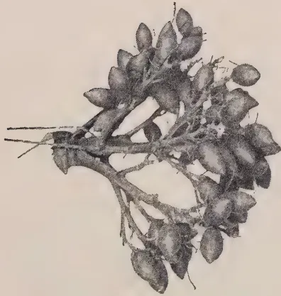
A detailed botanical illustration of a plant branch. The branch is woody and has several small, oval-shaped fruits or seed pods attached to it. The fruits are clustered together and have a slightly textured surface.I
I—Sinhala Puwak
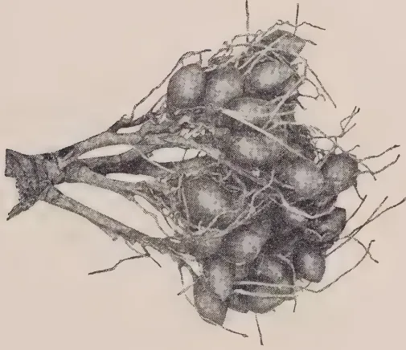
A detailed botanical illustration of a plant. The plant has a central stem with several large, rounded fruits or tubers clustered together. The fruits are connected to the stem by short stalks and have a rough, textured surface. The plant also has some thin, root-like structures extending from the base.II
II—Rata Puwak
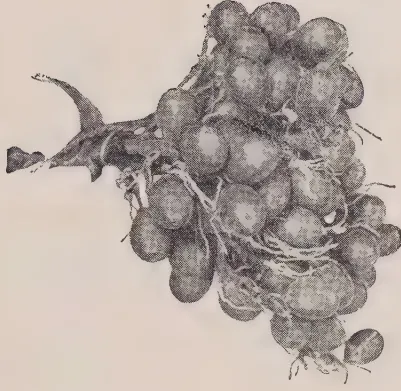
A detailed botanical illustration of a plant. The plant has a central stem with several large, rounded fruits or tubers clustered together. The fruits are connected to the stem by short stalks and have a rough, textured surface. The plant also has some thin, root-like structures extending from the base.III
III—Hamban Puwak
This image is a scan of a blank page. The paper has a light beige or cream-colored tint. There are some very faint, blurry vertical streaks and minor variations in color across the surface, which appear to be scanning artifacts or imperfections in the paper itself. No text, lines, or other markings are present.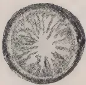
A detailed botanical illustration of a cross-section of a fruit. The interior is filled with numerous small, pointed segments or seeds arranged in a radial, star-like pattern around a central point.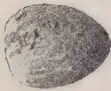
A small, oval-shaped whole fruit. The surface has a textured, slightly mottled appearance.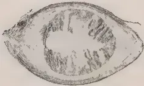
A longitudinal section of a fruit, showing its internal structure. It has a thick outer rind and a lighter-colored interior with some internal markings.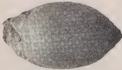
An elongated, pointed whole fruit. The surface is smooth with some fine texture.I
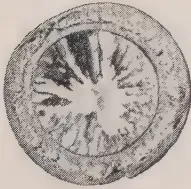
A detailed botanical illustration of a cross-section of a fruit. The interior is filled with numerous small, pointed segments or seeds arranged in a radial, star-like pattern around a central point.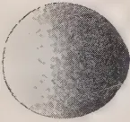
A small, oval-shaped whole fruit. The surface has a textured, slightly mottled appearance.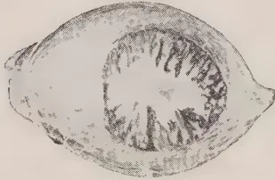
A longitudinal section of a fruit, showing its internal structure. It has a thick outer rind and a lighter-colored interior with some internal markings.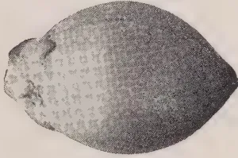
An elongated, pointed whole fruit. The surface is smooth with some fine texture.II
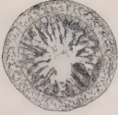
A detailed botanical illustration of a cross-section of a fruit. The interior is filled with numerous small, pointed segments or seeds arranged in a radial, star-like pattern around a central point.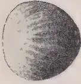
A small, oval-shaped whole fruit. The surface has a textured, slightly mottled appearance.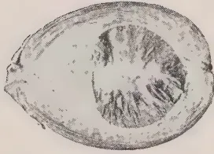
A longitudinal section of a fruit, showing its internal structure. It has a thick outer rind and a lighter-colored interior with some internal markings.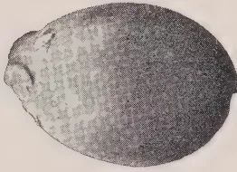
An elongated, pointed whole fruit. The surface is smooth with some fine texture.III
I—Sinhala Puwak
II—Rata Puwak
III—Hamban Puwak
This image is a scan of a blank page. The paper has a light beige or cream-colored tint. There are some very faint, blurry marks scattered across the surface, which appear to be scanning artifacts or minor imperfections in the paper itself. No text, lines, or other graphical elements are present. 45The market rates of arecanut products fluctuate; and at the present time they are as follows :
| (1) Whole green tender fruits | ... | Sold by the crop at the rate of Rs. 15 per 100 trees |
| (2) Whole ripe fruits | ... | Re. 1-25 per 1,000 |
| (3) Whole dry nuts (karunka) | ... | Rs. 16 per cwt. |
| (4) Split dry nuts (kalipakku) | } | 1st quality Rs. 36 per cwt. |
| 2nd quality Rs. 24 per cwt. | ||
| 3rd quality Rs. 17 per cwt. |
The trade of the Island in this product may be gauged from the following table :
| Quantity Exported (Dried Nuts) Cwt. |
Value Rs. |
|||
|---|---|---|---|---|
| 1922 | ... | 133,531 | ... | 3,331,148 |
| 1923 | ... | 160,578 | ... | 3,544,212 |
| 1924 | ... | 130,904 | ... | 3,294,961 |
| 1925 | ... | 154,291 | ... | 4,046,244 |
| 1926 | ... | 165,475 | ... | 4,247,825 |
| 1927 | ... | 118,278 | ... | 3,001,268 |
| Average of ten years— | ||||
| 1907-1916 | ... | 130,724 | ... | 2,590,624 |
| 1917-1926 | ... | 151,109 | ... | 3,450,512 |
Practically the whole of the quantity exported goes to India. 93.7 per cent. to British India and Burma and 3.2 per cent. to the Maldiv Islands.
The following information has been furnished by the Inspector for Plant Pests and Diseases, Central Division :
Insects.—One aphid and three different scale-insects are reported to occur. The spotted locust, Aularches miliaris, is not often found, but when present may do serious damage by feeding on the leaves.
Diseases.—The most harmful disease is caused by the fungus Phytophthora arecae; the fungus first attacks the fruits, causing them to rot and fall off while still immature. As the disease progresses the fruit-stalk withers and falls to the ground. The fungus will ultimately spread to the crown and cause a rot of the bud, which will result in the death of the tree. Wet weather favours the development of the fungus and the spread of the disease. The following preventive measures are recommended :
FOR THE MONTHS OF MAY AND JUNE, 1930
THE pruning of the plots which were not pruned last October, viz. plots 163, 164, 166, and the Hillside Tea, was completed in May. The style of pruning adopted was much lighter than that hitherto adopted on the Station: all side branches below the pruning level were left untouched.
After consultation with members of the sub-Committee appointed to discuss the question of a pruning experiment it was decided not to proceed with the scheme.
In June a mixture consisting of
| Calcium cyanamide | ... | ... | 100 lb. per acre. |
| Ephos Phosphate | ... | ... | 100 lb. ,, |
| Muriate of Potash | ... | ... | 50 lb. ,, |
was forked into all plots pruned in April and May together with the leafy material from Gliricidia.
The results of a number of experiments up to the end of 1929 which have not been previously published are included in this report.
This area is divided into three blocks A, B, and C.
Block A is planted with clumps of 4 trees 12 ft. by 15 ft., with 40 ft. between the clumps, giving 69 trees per acre.
Block B is planted in avenues 12 ft. by 15 ft. with 40 ft. between the avenues, giving 112 trees per acre.
Block C is planted 20 ft. by 20 ft., giving 109 trees per acre.
Half the trees in blocks A and B are tapped with a V cut and half with a single cut, while in block C half the trees are tapped on alternate days and half every third day. To compare the three methods of planting therefore, it is only possible to take into consideration those trees which are tapped on alternate days with a single cut. From such trees the following yields were obtained up to the end of 1929:
| Block and method of planting | No. of trees per acre | Average yield per tree | Calculated yield per acre | ||||
|---|---|---|---|---|---|---|---|
| 1929 lb. oz. | Previous 1922-28 lb. oz. | Total to date lb. oz. | 1929 lb. oz. | Previous 1922-28 lb. | Total to date lb. | ||
| A. Clumps of 4 trees 12 ft. by 15 ft. with 40 ft. between clumps | 69 | 5 2 | 27 15 | 33 1 | 354 | 2076 | 2430 |
| B. Avenues. Trees 12 ft. by 15 ft. with 40 ft. between avenues | 112 | 3 0 | 18 7 | 21 7 | 336 | 2041 | 2377 |
| C. Square planting, 20 ft. by 20 ft. | 109 | 3 12 | 21 7 | 25 3 | 420 | 2311 | 2731 |
The conditions in the three blocks are not equal but the superior yield per tree in the widely spaced clumps compels attention. There is a possibility that a modification of the clump system to give a few more trees per acre might give good results and at the same time give more room for the cultivation of catch crops when the rubber is young.
In growth, as shown by girth measurements, the trees in widely-spaced clumps also show remarkable superiority.
| Girth Dec. 1921 inches |
Girth Dec. 1929 inches |
Increase inches |
|||
|---|---|---|---|---|---|
| Block A | 28.5 | ... | 47.8 | ... | 19.3 |
| Block B | 29.5 | ... | 44.6 | ... | 15.1 |
| Block C | 27.5 | ... | 41.0 | ... | 13.1 |
As stated half the trees in blocks A and B are tapped with a V cut and half with a single left-to-right cut. In both cases the cuts occupy half the circumference and are at the same height from the ground. The average yields per tree since the start of the experiment are given below:
| Year | Single Cut | V Cut | Average | Average increase per tree from use of V cut. |
||||||||||
|---|---|---|---|---|---|---|---|---|---|---|---|---|---|---|
| Block A | Block B | Average | Block A | Block B | Average | lb. oz. | ||||||||
| 1922 (April to December) |
2 | 7 | 1 | 12 | 2 | 1 | 2 | 5 | 1 | 12 | 2 | 0 | — | 1 |
| 1923 | 3 | 11 | 2 | 4 | 3 | 0 | 4 | 0 | 2 | 12 | 3 | 6 | + | 6 |
| 1924 | 4 | 14 | 2 | 13 | 3 | 13 | 5 | 10 | 3 | 7 | 4 | 9 | + | 12 |
| 1925 | 5 | 0 | 3 | 2 | 4 | 1 | 5 | 7 | 3 | 10 | 4 | 9 | + | 8 |
| 1926 | 4 | 8 | 3 | 0 | 3 | 12 | 5 | 3 | 3 | 0 | 4 | 1 | + | 5 |
| 1927 | 5 | 0 | 2 | 14 | 3 | 15 | 5 | 6 | 3 | 9 | 4 | 8 | + | 9 |
| 1928 | 4 | 7 | 2 | 10 | 3 | 8 | 4 | 15 | 3 | 6 | 4 | 2 | + | 10 |
| 1929 | 5 | 11 | 3 | 0 | 4 | 6 | 6 | 11 | 4 | 3 | 5 | 7 | +1 | 1 |
| Total | 35 | 10 | 21 | 7 | 28 | 8 | 39 | 9 | 25 | 11 | 32 | 10 | +4 | 4 |
The figures show a steady superiority of yield from the V cut amounting over seven years and nine months to 4 lb. 4 oz. per tree.
It has been claimed that the use of a V cut results in a smaller proportion of scrap rubber. The difference in this experiment, however, is not marked. The figures are as follows:
| Year | Percentage scrap of total yield | |
|---|---|---|
| Single cut | V cut | |
| 1922 | ... | 11.0 |
| 1923 | ... | 11.6 |
| 1924 | ... | 10.7 |
| 1925 | ... | 16.8 |
| 1926 | ... | 17.7 |
| 1927 | ... | 23.3 |
| 1928 | ... | 17.1 |
| 1929 | ... | 18.0 |
| Average | ... | 21.4 |
| ... | 17.0 | |
In Block C a comparison between alternate day and three-day tapping is in progress.
48The cuts on the trees tapped every three days are started at two-thirds of the height of the cuts on the trees tapped on alternate days so that the two cuts reach the bottom of the trees at the same time.
The following table shows the average yields per acre :
| Year | Alternate day tapping | Three-day tapping | Percentage of alternate day tapping yield obtained by three-day tapping | ||||||
|---|---|---|---|---|---|---|---|---|---|
| Series 1 | Series 3 | Series 5 | Average | Series 2 | Series 4 | Series 6 | Average | ||
| lb. oz. | lb. oz. | lb. oz. | lb. oz. | lb. oz. | lb. oz. | lb. oz. | lb. oz. | ||
| 1922 (April to December) | 2 2 | 2 3 | 1 13 | 2 1 | 1 10 | 1 9 | 1 9 | 1 9 | 75.5 |
| 1923 | 3 0 | 3 2 | 2 10 | 2 15 | 2 10 | 2 4 | 2 8 | 2 7 | 85.1 |
| 1924 | 3 6 | 4 1 | 3 5 | 3 9 | 2 12 | 2 13 | 2 13 | 2 13 | 79.0 |
| 1925 | 3 6 | 3 12 | 3 13 | 3 11 | 2 15 | 2 15 | 2 15 | 2 15 | 81.4 |
| 1926 | 3 3 | 3 4 | 3 1 | 3 3 | 2 14 | 2 12 | 2 11 | 2 12 | 80.9 |
| 1927 | 3 5 | 2 15 | 3 8 | 3 4 | 2 6 | 2 8 | 2 7 | 2 7 | 82.5 |
| 1928 | 3 1 | 3 0 | 2 13 | 2 15 | 2 2 | 1 15 | 2 2 | 2 1 | 74.6 |
| 1929 | 3 11 | 3 14 | 3 11 | 3 12 | 3 5 | 2 13 | 2 11 | 2 15 | 78.3 |
| Total | 25 2 | 26 3 | 24 10 | 25 6 | 20 10 | 19 9 | 19 12 | 19 15 | 79.6 |
It appears that a reduction of the number of tappings by one-third reduces the yield by only about one-fifth.
Of possibly more interest than the yield per tree is the incidence of brown bast. From the start of the experiment the incidence has been less in the three-day tapping series. At the end of 1929 the total number of trees which had been treated for brown bast or showed symptoms of the disease amounted to 10% of the trees tapped on alternate days and 5.5% of the trees tapped every three days.
All the present experiments in the Hilltop rubber will terminate at the end of 1930.
In this area there is a comparison between tapping daily in alternate months and tapping on alternate days throughout the year. To obviate differences caused by unequal weather conditions in the different months two series are tapped daily in the months of January, March, May, etc., two are tapped daily in the months of February, April, June, etc., while the remaining two series are tapped throughout the year on alternate days.
The average yields per tree are given below :
| Year | Alternate daily throughout the year | Daily in January, March, May etc. | Daily in February, April, June etc. | Average of all daily tapped series | ||||||
|---|---|---|---|---|---|---|---|---|---|---|
| Series 1 | Series 6 | Average | Series 2 | Series 4 | Average | Series 3 | Series 5 | Average | ||
| lb. oz. | lb. oz. | lb. oz. | lb. oz. | lb. oz. | lb. oz. | lb. oz. | lb. oz. | lb. oz. | lb. oz. | |
| 1922 (April to Dec.) | 1 14 | 1 14 | 1 14 | 1 13 | 2 0 | 1 14 | 1 15 | 1 15 | 1 15 | 1 15 |
| 1923 | 3 8 | 3 0 | 3 4 | 3 0 | 3 3 | 3 2 | 2 14 | 3 0 | 2 15 | 3 0 |
| 1924 | 4 1 | 3 11 | 3 14 | 3 9 | 3 8 | 3 8 | 3 14 | 3 14 | 3 14 | 3 11 |
| 1925 | 3 13 | 3 4 | 3 9 | 3 10 | 3 9 | 3 9 | 3 12 | 3 15 | 3 14 | 3 11 |
| 1926 | 3 10 | 3 5 | 3 8 | 3 11 | 3 9 | 3 10 | 4 5 | 3 8 | 3 15 | 3 13 |
| 1927 | 4 4 | 4 12 | 4 8 | 3 5 | 3 12 | 3 8 | 3 14 | 4 0 | 3 15 | 3 12 |
| 1928 | 4 2 | 4 2 | 4 2 | 2 15 | 3 6 | 3 3 | 3 4 | 3 9 | 3 6 | 3 4 |
| 1929 | 4 10 | 4 7 | 4 8 | 3 12 | 4 8 | 4 3 | 4 3 | 4 6 | 4 4 | 4 4 |
| Total | 29 14 | 28 7 | 29 3 | 25 11 | 27 7 | 26 9 | 28 1 | 28 3 | 28 2 | 27 6 |
Over the whole period of 7 years and 9 months the yield of the trees tapped on alternate days shows a superiority of 1 lb. 10 oz. per tree. It is found that after resting for a month the trees usually take 10 days before resuming their full yield but in spite of this the yields from the two methods do not show marked differences. The yield from any part of an estate which was tapped daily in alternate months would depend largely on the incidence of rainfall for that year. It might be considered more convenient to have the tapping labour more concentrated.
The effect of different methods of tapping on brown bast incidence is always important. The number of cases among the trees tapped daily in alternate months has been consistently higher and at the end of 1929 the total number of trees which had been treated or which showed symptoms of the disease was 15% among the trees tapped daily in alternate months and 9% among those tapped on alternate days.
This experiment was started on April 1st, 1926. Two cuts, one left-to-right and one right-to-left, are put on each tree, each occupying a quarter of the circumference. The two cuts together form an inverted V and occupy half the circumference. The latex from all left-to-right cuts, and all right-to-left cuts is collected separately.
114 trees were originally used but 6 were treated for brown bast during 1929 and taken out of tapping.
The yields for 4 years are shown below :
| Year | Grammes dry rubber | Difference | ||
|---|---|---|---|---|
| Left-to-right cuts | Right-to-left cuts | |||
| 1926-27 | 162681 | 151119 | Left-to-right | 8% better |
| 1927-28 | 136397 | 143728 | Right-to-left | 5% ,, |
| 1928-29 | 140121 | 139060 | Left-to-right | % ,, |
| 1929-30 | 185739 | 182278 | Left-to-right | 1% ,, |
| Total | 624938 | 616185 | Left-to-right | 1% ,, |
The yields appear to indicate that the direction of the slope of the cut does not materially influence yield. The percentage of scrap is also the same in both cases.
A left-to-right cut is the normal estate practice and there would appear to be no object in changing this practice.
This experiment was started on April 2nd, 1928. There are 12 plots of 25 trees each. Six of these plots are tapped on alternate days throughout the year. The other six plots are divided into three sub-plots of 8 trees each known respectively as the (a), (b), and (c) sub-plots. Each of these sub-plots is rested in turn for a month at a time so that only two two-thirds of the trees in these six plots are in tapping at any one time.
The following are the yields per tree for the first two years :
[Faint page: no legible print of its own could be verified; text withheld (stage 4 review list)]
51The principal point calling for comment is that the loss in yield by resting one-third of the area under tapping for a month at a time is doubled in the second year of the experiment. The reason for this is by no means clear. It was thought that possibly there was a variation in the rubber content of the latex but this does not appear to be so. The figures are as follows :
No. of grammes of dry rubber in 100 c.c. Latex
| Continuously tapped plots | One-third rested plots | |||
|---|---|---|---|---|
| 1928-29 | ... | 34.7 | ... | 36.3 |
| 1929-30 | ... | 35.5 | ... | 37.9 |
The ratio between the figures from the two sets of plots has remained about the same and the question of rubber content affords no explanation of the problem. The rainfall for 1928-29 was 88.95 and for 1929-30, 98.71 in. As both sets of plots are tapped on the same days, however, all plots fare alike in the matter of weather conditions.
In any case it will be observed that considerably less than one-third of the crop is lost by resting one-third of the area, and, what is still more significant, in the continuously tapped plots 13 trees (9% of the total number) have been treated for or show symptoms of brown bast while there are no cases in the one-third resting plots. Both this method of tapping, therefore, and three-day tapping appear to confer a considerable measure of immunity from brown bast.
The Bandarattenne Rubber. Forking of Vigna vs. No Forking
In this area an experiment to determine the effect on yield of forking in a cover of Dolichos hosei (Vigna) was started on April 1st, 1928. The area was divided into 12 plots of 26 trees each, the plots receiving the different treatments being arranged in randomised pairs. In one set of plots the Vigna was cut and forked in by envelope-forking twice a year while in the other plots it was left untouched. A good even cover of Vigna existed at the start of the experiment.
The yields for the first two years of tapping were as follows :
[Faint page: no legible print of its own could be verified; text withheld (stage 4 review list)]
53In 1928-29 the forked plots showed a significant increase of yield of 9.7% over the unforked plots. This increase was much larger in 1929-30 and amounted to 19.9%.
Although the forked plots have yielded significantly more than the unforked plots there is no proof that the increase is due to the forking in of the green material. It is quite possible, and even probable, that it is due to the forking, and a modification of the experiment is needed to elucidate this point. It is proposed in future to fork both sets of plots but only to fork in the green material in one set of plots.
In the meantime, however, the cover has become very patchy and many bare spaces are to be seen especially in the forked plots where the vigna has in many cases failed to come on again after forking. It is proposed therefore to suspend the experiment for a year and in that time to try to re-establish an even cover of vigna.
This plot was planted in December 1922. Buds from what were then (after 1 year's tapping) the twelve best yielders in plots 14-15 (progeny of No. 2 tree Heneratgoda) were put on to stocks grown from seed of No. 2 tree Heneratgoda.
In the light of modern knowledge of what constitutes a high-yielding rubber tree none of the mother trees used can be considered high yielders and it is therefore not surprising that no high-yielding clones are found among the offspring. Tapping was started with a single cut on the half circumference at a height of 21 inches on May 1st, 1928. The yields for the first two years of tapping are as follows:
| No. of Clone | No. of trees in Clone | Mean yield of dry rubber in grammes per tapping | Mean yield of dry rubber per tree per year | ||||
|---|---|---|---|---|---|---|---|
| 1928-29 grammes | 1929-30 grammes | 1928-29. | 1929-30. | ||||
| grammes | lb. | grammes | lb. | ||||
| P 5 | 10 | 4.12 | 7.24 | 688.20 | 1.52 | 1194.60 | 2.74 |
| P 12 | 9 | 4.14 | 6.95 | 691.33 | 1.52 | 1148.77 | 2.64 |
| P 32 | 8 | 3.79 | 6.52 | 633.38 | 1.40 | 1076.75 | 2.47 |
| P 38 | 8 | 4.05 | 7.15 | 675.75 | 1.49 | 1180.25 | 2.71 |
| P 42 | 10 | 3.39 | 5.33 | 550.00 | 1.23 | 979.90 | 2.25 |
| P 54 | 5 | 3.00 | 6.66 | 500.00 | 1.10 | 1099.40 | 2.52 |
| P 67 | 7 | 3.52 | 6.59 | 588.29 | 1.30 | 1087.00 | 2.50 |
| P 82 | 9 | 4.13 | 6.64 | 689.55 | 1.52 | 1096.55 | 2.52 |
| P 83 | 10 | 2.76 | 5.63 | 463.80 | 1.02 | 929.10 | 2.13 |
| P 109 | 7 | 4.46 | 6.35 | 748.86 | 1.65 | 1049.42 | 2.41 |
| P 138 | 3 | 4.64 | 6.94 | 775.00 | 1.71 | 1146.00 | 2.63 |
| P 160 | 8 | 4.16 | 6.88 | 694.25 | 1.53 | 1136.50 | 2.61 |
All yields show a considerable increase in 1929-30 which is partly due to the increased age of the trees and partly to better weather conditions.
On May 1st, 1930 the trees were divided into three groups of 30 trees each and tapping was started on the other side of the trees at three different heights. One group is being tapped at 5 feet from the ground, one at 3 feet and one at 1 foot. All cuts are on the half circumference at an angle of . Tapping is on alternate days.
54The area used for this experiment is divided into four plots. In each plot the bark consumption is worked out so as to use up the available bark in one, two, three, and four years respectively.
Plot 1 is tapped daily to the wood on two cuts on the half circumference with 2 inches of bark consumption per month.
Plot 2 is tapped daily to the wood on two cuts with inches of bark consumption per month.
Plot 3 is tapped daily to the wood on two cuts with inches of bark consumption per month.
Plot 4 is tapped daily in alternate months, fine tapping but not to the wood, with inches of bark consumption per month. Plot 4 thus receives only half the number of tappings given to plots 1, 2 and 3.
The two cuts are in each case one above the other.
Quite early in the experiment it was apparent that many of the cuts, both top and bottom, in plots 1, 2, and 3 were going dry. In these cases the cut was changed to the other side of the tree. In a few cases these second cuts have also gone dry and the tree is yielding little or nothing. It appeared thus that daily tapping was defeating its own ends and was possibly uneconomic except over a period of 3 or 4 months.
An article entitled "Tapping to Death: A Warning." was contributed to the April number of The Tropical Agriculturist in which the results of this tapping for 4 months were given.
The results after 8 months of tapping are as follows:
| Plot 1 | Plot 2 | Plot 3 | Plot 4 | |
|---|---|---|---|---|
| Number of original top cuts put on | 68 | 76 | 43 | 40 |
| Number of original bottom cuts put on | 68 | 76 | 43 | 40 |
| Number of second top cuts put on when original cuts had gone dry | 14 | 27 | 8 | — |
| Number of second bottom cuts put on | 29 | 23 | 18 | 1 |
| Total number of cuts opened | 179 | 202 | 112 | 81 |
| Number of original top cuts gone dry | 13 | 28 | 9 | — |
| Number of original bottom cuts gone dry | 28 | 25 | 18 | 1 |
| Number of second top cuts gone dry | 1 | 1 | 1 | — |
| Number of second bottom cuts gone dry | 2 | 2 | 1 | — |
| Total number of cuts gone dry | 44 | 56 | 29 | 1 |
| Percentage of cuts gone dry | 25 | 28 | 26 | 1 |
| Number of trees in plot | 68 | 76 | 43 | 40 |
| Yield of dry rubber per tree for 8 months' tapping | lb. oz. 10 14 |
lb. oz. 11 14 |
lb. oz. 13 0 |
lb. oz. 10 9 |
It was pointed out in the article referred to that the rapid drying out of cuts was not more pronounced in the top cuts than in the bottom cuts, in fact the reverse has been the case. Arguments were also adduced to show that
55tapping to the wood was not responsible. The varying amount of bark consumption appears also to have exerted little influence and everything points to the daily tapping as the cause of the trouble.
At the end of 8 months the yield of plot 4 which has received only half the number of tappings given to the other three plots is not greatly in arrears and it seems quite possible that it may catch up the other three plots by the end of a year. Even if it fails to do this the crop from plot 4 will have been obtained at much less cost than that from the plots tapped daily throughout.
In spite of the losses through cuts drying out, however, the general level of yields is well worthy of note. Yields of from 10 to 13 lb. of dry rubber in 8 months, which include the wintering period, indicate that when the best system of tapping to death is evolved yields amounting to two and a half times the normal may be easily obtained.
It is at present tentatively suggested that four cuts on a third (or rather more than a third as long as the tree is not completely ringed) tapped on alternate days or daily in alternate months might give the highest yield.
The yields of dry cacao per acre for the last seven years have been as follows :
| Year | cwt. per acre of dry cacao | Rainfall | |
|---|---|---|---|
| 1923-24 | ... | 2.24 | 106.42 |
| 1924-25 | ... | 3.10 | 103.82 |
| 1925-26 | ... | 5.45 | 87.31 |
| 1926-27 | ... | 5.03 | 98.11 |
| 1927-28 | ... | 4.41 | 80.33 |
| 1928-29 | ... | 2.49 | 88.95 |
| 1929-30 | ... | 4.58 | 98.71 |
From 1921 to January 1928, no manures were applied to the cacao. From January 1928, 12 out of the 41 acres of cacao have received phosphatic and potash manures in accordance with the manurial experiment now in progress. The above yields tend to show that cacao yields fluctuate far more with the season than as the result of manurial treatment.
Holes were dug over about 30 acres to receive dadap cuttings to increase the shade where this had become deficient, and cuttings were planted in the latter half of June.
Pruning of all coffee was started when the crop season was over and was nearly completed by the end of June.
Plot 167, containing Efwatakala grass (Melinis minutiflora), was ploughed up in May and replanted in June with Guinea grass (Panicum maximum). The Efwatakala grass had become so choked with Couch grass and other weeds that its retention was considered useless. This is, at Peradeniya, the common fate of all creeping grasses in which systematic weeding is not practicable.
The trial of Indigofera endecaphylla as a grazing plant was recorded in the report for November and December, 1929. Subsequent experience has shown that though well liked by cattle the plant will not stand continuous grazing. It has however, proved exceedingly useful as a cut fodder to supplement the supply of grass in times of shortage.
56One plant of the consignment of grapefruit plants received from South Africa in April, 1928, matured two fruits in May, 1930, at an age of just over two years. The variety was Cecily Seedless and the flavour of the fruit was distinctly different from that of fruits from Ceylon seedlings and much more akin to the flavour of Californian grapefruit.
It was reported last year that the plants of Hydnocarpus whightiana (one of the sources of Chaulmoogra oil) growing in the terraced valley were severely attacked by a leaf eating caterpillar. The plants remained in a moribund condition for some months and in May, 1930, a fresh attack of the same caterpillar occurred. The land in the terraced valley falls naturally into three blocks and it has been decided to retain the block containing the best of the Hydnocarpus trees in this crop and to plant the other two blocks with Tarakto-genos kurzii and Aleurites montana respectively. The former is another chaulmoogra oil-producing tree which does not appear to be attacked by the caterpillar which has done so much damage to the Hydnocarpus. The latter is one of the sources of Tung oil. This reorganisation was started in the latter half of June.
Neither Cinchona robusta nor Cinchona ledgeriana, of which plants from Hakgala were planted in plot 25 in June, 1929, are thriving. Of the two C. ledgeriana is the best.
Section II of the Manual of green manuring in Ceylon, comprising the Green Manuring of tea, coffee, and cacao, was submitted for publication at the end of April.
The number of visitors during the period under review has been above the average but none of these came on the first visitors' day. On the second visitors' day two visitors arrived but they were not aware that it was a visitors' day.
Weather conditions were abnormal. Torrential rains accompanied by floods fell on May 5th and 6th. On May 6th and 7th a large stretch of the approach road, the dwarf coconut area, the Gannoruwa paddy fields, the Totadeniya paddy fields, and grass plot 167 were completely submerged. A period of severe drought followed; the rainfall from May 13th to June 13th, amounted only to .35 inches.
A considerable amount of work in preparation for the budding and planting to be done towards the end of the year has been completed.
The three areas laid out on the plant for this year's budding and planting have been divided into blocks and plots, the position of the plots in the blocks being randomised. All stocks in the fields have been painted with distinctive colours representing the clone to be budded on to the stock, and where there are no stocks at present and budding is to be done in the nursery the peg bearing the hole label has been similarly painted.
Planting sheets have been prepared showing the numbers of the holes to be occupied by each clone.
All border row seedlings have been painted with a white band and all vacancies in border rows have been filled.
57All vacancies, which will be filled with budded plants from the nursery, have been re-holed.
In area 2, which will be entirely planted with stumps budded in the nursery, all holes have been re-dug. A quantity of green material has been buried in all these holes when filling.
All terraces have been cleaned and any damage repaired.
In area 6 (planted with foreign clones) the bush green manure plants were lopped for the second time and the loppings spread along the terraces.
In the newly completed area 7 (to be planted with the remainder of the foreign clones available this year) a mixture of Tephrosia candida, Tephrosia tinctoria, Crotalaria anagyroides, and Crotalaria usaramoenis has been sown along the banks in addition to the creeping cover of Centrosema pubescens and Calopogonium mucunoides which is already established.
Land has been cleared and a new nursery laid out for the reception of 1930 seed to grow stocks for 1931 budding.
After the completion of these works the labour force was mostly employed in extracting stumps, building stone steps and fencing. The estimates for the former two works are already expended but no other work has been available and shortage of funds precluded the use of this labour on the Experiment Station.
T. H. HOLLAND,
Manager,
Experiment Station,
Peradeniya.
THE above competition was organised at a meeting held on King's Birthday in 1927 presided over by Mr. L. Archdale, Superintendent, Lassahena Estate, in order to encourage Home Gardens of both present and old boys.
Mr. Archdale very kindly offered Rs. 30/- as prize money for these competitions.
This year 29 old boys and 37 present boys entered the competition. The gardens were systematically planted and well cultivated. All the gardens were visited by the head teacher and the Agricultural Instructor, Ruanwella, and the final judging was carried out by the Agricultural Instructor.
The following were adjudged prize winners :
| 1st prize | Dingiri Mahatmaya | ... | ... | Rs. 10.00 |
| 2nd ,, | Wijeyasekera | ... | ... | ,, 5.00 |
| 1st prize | Y. P. Brampy Appu Hamy | ... | ... | Rs. 10.00 |
| 2nd ,, | U. D. Hendrick Singho | ... | ... | ,, 5.00 |
These prizes were distributed at the King's Birthday celebrations. Certificates were also issued to the successful competitors.
A vegetable, garden competition was held during 1929-30 for Raigam Korale and Kalutara and Panadura Totamunes in the Kalutara District when 90 competitors were registered. The number of entrants is considered satisfactory in view of the adverse weather conditions prevailing at the commencement of the competition. Further the standard of the plots entered for competition was high, and a distinct improvement on the competition held last year. Advice and assistance were given by the Agricultural Instructor of the division, who also conducted the preliminary judging.
At the final judging carried out by the Divisional Agricultural Officer, South-Western, Gampaha, the following were declared winners :
| 1st | Didaragama Vidanelage Juvanis Appuhamy | Rs. 25.00 |
| 2nd | Matara Aratchilage Chilis Sinno | ,, 15.00 |
| 3rd | Marasinhawasige Davith Sinno | ,, 10.00 |
| 4th | W. Mary Nona | Certificate |
| 1st | Edusooriyage Peeris Perera | Rs. 25.00 |
| 2nd | Don Luvis Rodrigo | ,, 15.00 |
| 3rd | M. Peter Peeris | ,, 10.00 |
| 4th | A. P. Lucas Vas | Certificate |
| Province, &c. | Disease | No. of Cases up to Date since Jan. 1st 1930 | Fresh Cases | Recoveries | Deaths | Balance Ill | No. Shot |
|---|---|---|---|---|---|---|---|
| Western | Rinderpest | 595 | 115 | 92 | 426 | 4 | 73 |
| Foot-and-mouth disease | 254 | ... | 218 | 10 | 26 | ... | |
| Anthrax | ... | ... | ... | ... | ... | ... | |
| Piroplasmosis | ... | ... | ... | ... | ... | ... | |
| Rabies (Dogs) | ... | ... | ... | ... | ... | ... | |
| Colombo Municipality | Rinderpest | ... | ... | ... | ... | ... | ... |
| Foot-and-mouth disease | 443 | 2 | 429 | 12 | 1 | 1 | |
| Anthrax | 1 | ... | ... | 1 | ... | ... | |
| Haemorrhagic septicaemia | 6 | 1 | ... | 6 | ... | ... | |
| Black Quarter | 2 | ... | ... | 2 | ... | ... | |
| Bovine Tuberculosis | 1 | ... | ... | 1 | ... | ... | |
| Rabies (Dogs) | 8 | 1 | ... | ... | ... | 8 | |
| Cattle Quarantine Station | Rinderpest | ... | ... | ... | ... | ... | ... |
| Foot-and-mouth disease | ... | ... | ... | ... | ... | ... | |
| Anthrax (Goats) | 295* | 70 | ... | 295 | ... | ... | |
| Central | Rinderpest | ... | ... | ... | ... | ... | ... |
| Foot-and-mouth disease | 643 | 50 | 600 | 2 | 41 | ... | |
| Anthrax | 1 | ... | ... | 1 | ... | ... | |
| Piroplasmosis | 4 | ... | 1 | 3 | ... | ... | |
| Rabies (Dogs) | 6 | 4 | ... | 4 | ... | 2 | |
| Southern | Rinderpest | 122 | 18 | 21 | 101 | ... | ... |
| Foot-and-mouth disease | 269 | 10 | 263 | 6 | ... | ... | |
| Anthrax | ... | ... | ... | ... | ... | ... | |
| Rabies (Dogs) | 1 | ... | ... | 1 | ... | ... | |
| Northern | Rinderpest | 5† | 5 | ... | 1 | 4 | ... |
| Foot-and-mouth disease | 2975 | ... | 2905 | 70 | ... | ... | |
| Black Quarter | 126 | ... | ... | 126 | ... | ... | |
| Rabies (Dogs) | 3 | ... | ... | ... | ... | 3 | |
| Anthrax | ... | ... | ... | ... | ... | ... | |
| Eastern | Rinderpest | ... | ... | ... | ... | ... | ... |
| Foot-and-mouth disease | 100 | 12 | 86 | 2 | 12 | ... | |
| Anthrax | ... | ... | ... | ... | ... | ... | |
| North-Western | Rinderpest | 3860 | 425 | 160 | 2950 | 16 | 734 |
| Foot-and-mouth disease | 70 | 66 | 70 | ... | ... | ... | |
| Anthrax | ... | ... | ... | ... | ... | ... | |
| Pleuro-Pneumonia (in Goats) | 50 | ... | ... | 50 | ... | ... | |
| North-Central | Rinderpest | ... | ... | ... | ... | ... | ... |
| Foot-and-mouth disease | 1069 | ... | 1045 | 24 | ... | ... | |
| Anthrax | ... | ... | ... | ... | ... | ... | |
| Uva | Rinderpest | ... | ... | ... | ... | ... | ... |
| Foot-and-mouth disease | 72 | ... | 72 | ... | ... | ... | |
| Anthrax | ... | ... | ... | ... | ... | ... | |
| Sabaragamuwa | Rinderpest | 60 | 3 | 5 | 53 | ... | 2 |
| Foot-and-mouth disease | 1295 | 136 | 1249 | 10 | 36 | ... | |
| Anthrax | ... | ... | ... | ... | ... | ... | |
| Haemorrhagic septicaemia | 9 | ... | ... | 9 | ... | ... | |
| Rabies (Dogs) | 9 | ... | ... | 2 | ... | 7 |
* 1 case in a buffalo.
† At the Kayts Quarantine Camp in a batch of cattle imported from India on 18th June.
G. V. S. Office,
Colombo, 9th July, 1930.
G. W. STURGESS,
Government Veterinary Surgeon.
JUNE, 1930
| Station | Temperature | Humidity | Amount of Cloud | Rainfall | ||||||
|---|---|---|---|---|---|---|---|---|---|---|
| Mean Maximum | Difference from Average | Mean Minimum | Difference from Average | Day | Night (from Minimum) | Amount | No. of Rainy Days | Difference from Average | ||
| ° | ° | ° | ° | % | % | Inches | Inches | |||
| Colombo | 84.9 | -0.3 | 75.7 | -1.3 | 82 | 88 | 9.0 | 13.34 | 25 | + 4.98 |
| Puttalam | 85.8 | +0.1 | 78.8 | +0.9 | 76 | 85 | 7.1 | 0.16 | 4 | - 1.54 |
| Mannar | 88.0 | -0.8 | 80.3 | +0.2 | 74 | 82 | 9.0 | 0.10 | 1 | - 0.44 |
| Jaffna | 86.1 | +0.5 | 81.2 | +0.6 | 77 | 79 | 6.7 | 0.13 | 1 | - 0.50 |
| Trincomalee | 90.1 | -1.7 | 78.1 | +0.1 | 64 | 80 | 6.8 | 0.94 | 4 | - 0.28 |
| Batticaloa | 91.4 | -0.9 | 76.7 | +0.1 | 67 | 84 | 7.0 | 3.13 | 9 | + 2.20 |
| Hambantota | 85.9 | -0.3 | 76.1 | +0.4 | 79 | 88 | 5.6 | 1.63 | 12 | - 0.73 |
| Galle | 84.0 | +0.3 | 76.5 | -0.7 | 84 | 88 | 7.6 | 8.09 | 25 | - 0.23 |
| Ratnapura | 86.2 | +0.6 | 73.8 | -1.0 | 78 | 93 | 8.0 | 17.68 | 28 | - 2.21 |
| A'pura | 89.2 | -0.9 | 76.0 | -0.3 | 68 | 91 | 7.8 | 0.16 | 2 | - 1.12 |
| Kurunegala | 86.5 | -0.1 | 75.5 | +0.1 | 76 | 86 | 8.7 | 3.15 | 16 | - 4.77 |
| Kandy | 83.0 | +1.1 | 70.9 | -0.1 | 76 | 87 | 8.0 | 11.75 | 23 | + 2.35 |
| Badulla | 83.9 | -1.3 | 65.5 | +0.9 | 71 | 95 | 6.9 | 3.82 | 14 | + 1.64 |
| Diyatalawa | 76.4 | -1.5 | 61.6 | -0.9 | 66 | 76 | 7.4 | 0.62 | 5 | - 1.27 |
| Hakgala | 69.1 | +0.4 | 57.9 | +0.9 | 80 | 83 | 5.8 | 7.97 | 18 | + 0.35 |
| N'Eliya | 66.5 | +2.0 | 55.2 | +1.1 | 84 | 91 | 8.5 | 10.92 | 26 | - 1.62 |
The rainfall of June was slightly above average in the Western Province, but below it in those parts of Sabaragamuwa and the C.P. which constitute the main south-western face of the hill-country, and in Kalmunai, only small variations from average occurred, deficits being decidedly more common than excesses.
In the remainder of the island the June averages are not high, and the fact that they were passed on the lee side of the main hills does not denote heavy rain in these areas. North of a line from Negombo through Kandy to Batticaloa, and south of one from Ambalangoda through Koslanda to Kalmunai, only small variations from average occurred, deficits being decidedly more common than excesses.
The highest total was 31.13 inches at Kenilworth, which is nearly six inches below the June average at that station. Only a few stations recorded no rain at all. These were mostly in the Vavuniya district but also included Kayts and Delft. Maggona with 5.30 on June 1st was the only station to record more than 5 inches in one day.
The amount of cloudiness was considerably above average and the duration of sunshine was consistently below. The same thing shows mildly in the temperature offsets, as the mean maximum temperatures were below average at more than half the stations, while the mean minimum temperatures were more often above average than below.
Hail was reported at Badulla on June 4th.
The total wind mileage for the month was below average throughout, despite some individual cases of high wind, notably on the 29th and 30th, when velocities of 52 and 49 miles per hour were recorded at Colombo Harbour and high winds were also reported in the Diyatalawa and Ohiya districts.
A. J. BAMFORD,
Superintendent, Observatory.